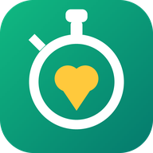

<!doctype html>
<html lang="th">
<head>
<meta charset="utf-8">
<meta name="viewport" content="width=device-width, initial-scale=1, viewport-fit=cover">
<title>CareSignal V3 · ลูกหลานวัดให้</title>
<meta name="description" content="ลูกหลานจับเวลาแบบทดสอบลุกนั่ง ลุกเดิน และทรงตัวให้ผู้สูงอายุที่บ้าน รู้ผลทันที ดูแนวโน้ม พกใบสรุปไปพบแพทย์ — จับเวลาเอง หรือให้กล้องช่วยนับก็ได้">
<link rel="manifest" href="./manifest.json">
<link rel="icon" href="./icon-192.png">
<meta name="theme-color" content="#F4F6F8">
<link rel="preconnect" href="https://fonts.googleapis.com">
<link href="https://fonts.googleapis.com/css2?family=Prompt:wght@400;500;600;700&family=Noto+Sans+Thai:wght@400;500;600&family=Sarabun:ital,wght@0,400;0,600;0,700;1,400&display=swap" rel="stylesheet">
<style>
:root{
  --bg:#F2F6FB; --surf:#FFF; --surf2:#EAF0FE; --ink:#16233B; --ink2:#5B6B84; --ink3:#93A1B7;
  --line:#DFE7F2; --line2:#EDF2FA; --brand:#2563EB; --brand2:#1D4ED8;
  --accent:#F59E0B; --accent2:#B45309; --accentb:#FEF3C7;
  --c4:#0E9F6E; --c3:#C79200; --c2:#D97706; --c1:#DC2626;
  --c4b:#E3F6EF; --c3b:#FEF6DE; --c2b:#FDECD8; --c1b:#FEE9E9;
  --sans:"Prompt","Noto Sans Thai",system-ui,sans-serif;
  --sh:0 1px 2px rgba(22,35,59,.04),0 6px 18px rgba(22,35,59,.05);
}
*{box-sizing:border-box;-webkit-tap-highlight-color:transparent}
html,body{margin:0;height:100%}
body{background:#D9DEE2;font-family:var(--sans);color:var(--ink);font-size:17px;line-height:1.65;display:flex;align-items:center;justify-content:center}
.phone{position:relative;width:420px;height:880px;max-height:100vh;background:var(--bg);border-radius:42px;overflow:hidden;box-shadow:0 30px 80px rgba(22,35,59,.3);display:flex;flex-direction:column}
@media(max-width:480px),(max-height:740px),(display-mode:standalone){body{display:block;background:var(--bg)}.phone{width:100%;height:100dvh;max-height:none;border-radius:0;box-shadow:none}}
.bar{flex:none;background:linear-gradient(135deg,var(--brand2),var(--brand) 62%,#3B82F6);color:#fff;padding:calc(env(safe-area-inset-top) + 14px) 20px 14px}
.bar .kick{font-size:11px;letter-spacing:.16em;text-transform:uppercase;color:#FCD34D}
.bar h1{margin:2px 0 0;font-size:22px;font-weight:600;line-height:1.3}
.bar p{margin:5px 0 0;font-size:14px;opacity:.82;line-height:1.5}
.backb{background:none;border:0;color:#fff;font:inherit;font-size:14px;padding:0;margin-bottom:6px;opacity:.8;cursor:pointer}
.view{flex:1;overflow:auto;padding:16px 16px 24px;-webkit-overflow-scrolling:touch}
.tabs{flex:none;display:flex;gap:6px;padding:8px 10px calc(env(safe-area-inset-bottom) + 8px);background:var(--surf);border-top:1px solid var(--line)}
.tabs button{flex:1;border:0;border-radius:16px;background:var(--surf2);color:var(--ink2);font:inherit;font-size:13.5px;font-weight:600;padding:10px 4px 8px;cursor:pointer;line-height:1.2}
.tabs button .ic{display:block;font-size:22px;margin-bottom:2px}
.tabs button.on{background:var(--brand);color:#fff}
.card{background:var(--surf);border-radius:18px;padding:16px 18px;box-shadow:var(--sh);margin-bottom:14px}
.card h3{margin:0 0 6px;font-size:18px}
.sub{color:var(--ink2);font-size:14.5px;margin:0 0 10px;line-height:1.55}
label.f{display:block;font-size:14px;color:var(--ink2);margin:10px 0 4px}
input[type=text],input[type=tel],input[type=email],input[type=number],select,textarea{width:100%;font:inherit;font-size:17px;padding:12px 14px;border:1.5px solid var(--line);border-radius:14px;background:#fff;color:var(--ink)}
textarea{min-height:70px}
.btn{display:block;width:100%;border:0;border-radius:18px;background:var(--brand);color:#fff;font:inherit;font-size:19px;font-weight:600;padding:17px;margin-top:12px;cursor:pointer;box-shadow:var(--sh)}
.btn.sec{background:var(--surf2);color:var(--brand2)}
.btn.ghost{background:none;color:var(--ink2);box-shadow:none;font-size:16px;padding:10px}
.btn.danger{background:var(--c1)}
.btn:disabled{opacity:.45}
.chk{display:flex;gap:12px;align-items:flex-start;padding:10px 0;border-bottom:1px dashed var(--line);font-size:15.5px;line-height:1.5}
.chk input{width:24px;height:24px;flex:none;margin-top:2px}
.opt{display:flex;flex-direction:column;gap:8px}
.opt button{text-align:left;border:1.5px solid var(--line);background:#fff;border-radius:14px;padding:13px 15px;font:inherit;font-size:16.5px;cursor:pointer}
.opt button.on{border-color:var(--brand);background:var(--surf2);font-weight:600}
.yn{display:flex;gap:8px}.yn button{flex:1}
.big{font-size:64px;font-weight:700;text-align:center;letter-spacing:-.02em;line-height:1;margin:14px 0 6px;font-variant-numeric:tabular-nums}
.big small{font-size:22px;color:var(--ink2);font-weight:500}
.sw{border:0;border-radius:26px;width:100%;padding:28px;font:inherit;font-size:26px;font-weight:700;color:#fff;background:var(--c4);cursor:pointer;box-shadow:var(--sh)}
.sw.stop{background:var(--c1)}
.tier{border-radius:18px;padding:18px;text-align:center;margin-bottom:14px}
.t4{background:var(--c4b);color:var(--c4)}.t3{background:var(--c3b);color:var(--c3)}.t2{background:var(--c2b);color:var(--c2)}.t1{background:var(--c1b);color:var(--c1)}
.tier b{display:block;font-size:26px}
.tier span{display:block;color:var(--ink);font-size:15px;margin-top:6px}
.flag{border-left:4px solid var(--c3);background:#FFFBEB;border-radius:0 12px 12px 0;padding:9px 12px;margin:8px 0;font-size:14.5px;line-height:1.5}
.flag.red{border-color:var(--c1);background:var(--c1b)}
.flag.good{border-color:var(--c4);background:var(--c4b)}
.flag small{display:block;color:var(--ink2);font-size:13px}
.steps{counter-reset:s}.steps div{position:relative;padding:8px 0 8px 40px;font-size:15.5px;border-bottom:1px dashed var(--line)}
.steps div::before{counter-increment:s;content:counter(s);position:absolute;left:0;top:8px;width:28px;height:28px;border-radius:50%;background:var(--brand);color:#fff;font-weight:700;text-align:center;line-height:28px;font-size:14px}
.warn{background:var(--accentb);border:1px solid #F5D78E;border-radius:14px;padding:12px 14px;font-size:14.5px;line-height:1.55;margin:10px 0}
.hist{display:flex;justify-content:space-between;align-items:center;padding:11px 0;border-bottom:1px dashed var(--line);font-size:15px}
.pill{font-size:12.5px;font-weight:600;padding:3px 10px;border-radius:99px}
.vid{aspect-ratio:16/9;width:100%;border-radius:14px;background:#0F2A5C;color:#fff;display:flex;align-items:center;justify-content:center;text-align:center;font-size:14.5px;padding:14px;margin-bottom:8px}
.vid iframe{width:100%;height:100%;border:0;border-radius:14px}
.toast{position:absolute;left:20px;right:20px;bottom:100px;background:var(--ink);color:#fff;font-size:14px;padding:12px 16px;border-radius:14px;opacity:0;transform:translateY(8px);transition:.25s;pointer-events:none;z-index:50}
.toast.on{opacity:1;transform:none}
.prog{display:flex;gap:4px;margin-top:10px}.prog i{flex:1;height:5px;border-radius:3px;background:rgba(255,255,255,.3)}.prog i.on{background:#FCD34D}
.src{display:block;margin-top:3px;font-size:12px;color:var(--ink3)}
.pend{background:#F1F5FF;border:2px dashed #93A1B7;border-radius:18px;padding:18px;text-align:center;margin-bottom:14px}
.pend b{display:block;font-size:22px;color:var(--brand2)}.pend span{display:block;font-size:15px;margin-top:6px}
.conf{border:2px solid var(--c4);border-radius:18px;padding:14px 16px;margin-bottom:14px;background:#fff}
.conf h3{margin:0 0 6px;color:var(--c4)}
.medi{display:flex;gap:10px;align-items:center;padding:10px 0;border-bottom:1px dashed var(--line)}
.medi img{width:56px;height:56px;object-fit:cover;border-radius:10px;border:1px solid var(--line);flex:none}
.medi .nm{flex:1;font-size:15px;line-height:1.4}.medi .nm small{display:block;color:var(--ink2)}
.tabs button{position:relative}.tabs .dot{position:absolute;top:6px;right:14px;width:10px;height:10px;border-radius:50%;background:var(--c1)}
.doc{background:#fff;border-radius:14px;padding:16px;font-size:14.5px;line-height:1.6;box-shadow:var(--sh)}
.doc h2{font-size:18px;margin:0 0 6px}.doc table{border-collapse:collapse;width:100%;margin:8px 0;font-size:13px}
.doc td,.doc th{border:1px solid var(--line);padding:5px 6px;text-align:left}
.isheet{position:fixed;inset:0;background:rgba(15,27,51,.55);z-index:60;display:flex;align-items:flex-end;justify-content:center;padding:18px}
.isheet .cd{background:#fff;border-radius:22px;padding:22px;max-width:420px;width:100%;max-height:82vh;overflow:auto}
.isheet h3{margin:0 0 8px;font-size:19px}
.isheet ol{margin:0;padding-left:20px;font-size:15px;line-height:1.9;color:var(--ink2)}
.isheet p{font-size:13.5px;color:var(--ink3);line-height:1.7;margin:10px 0 0}
.a2hs{position:fixed;left:50%;transform:translateX(-50%);bottom:calc(84px + env(safe-area-inset-bottom));z-index:55;
  display:flex;gap:8px;align-items:center;background:var(--brand2);color:#fff;border-radius:99px;padding:8px 10px 8px 16px;
  font-size:13.5px;white-space:nowrap;box-shadow:0 12px 30px rgba(15,27,51,.35);max-width:94vw}
.a2hs button{border:0;font-family:inherit;cursor:pointer;border-radius:99px}
.a2hs .go{background:#fff;color:var(--brand2);font-weight:700;font-size:14px;padding:8px 15px}
.a2hs .x{background:transparent;color:#C9D6F2;font-size:15px;padding:6px 8px}
/* ================= หน้าตาชุดใหม่ ================= */
:root{
  --bg:#F4F6F8; --surf2:#E7F6F3; --line:#E1E8EE; --line2:#EEF3F6;
  --brand:#0F9C8C; --brand2:#0B766A; --brandt:#E7F6F3; --ink:#1E2A33; --ink2:#5E6B75; --ink3:#97A3AD;
  --sh:0 1px 2px rgba(30,42,51,.04),0 8px 22px rgba(30,42,51,.06);
}
.bar{position:relative;background:var(--bg);color:var(--ink);padding:calc(env(safe-area-inset-top) + 16px) 20px 10px}
.bar .kick{color:var(--ink3);font-size:11.5px;letter-spacing:.12em}
.bar h1{color:var(--brand2);font-size:25px;font-weight:700;padding-right:48px}
.bar p{color:var(--ink2);opacity:1}
.backb{color:var(--brand2);opacity:1;font-weight:600;font-size:15px}
.prog i{background:#D3E7E3}.prog i.on{background:var(--brand)}
.bell{position:absolute;right:14px;top:calc(env(safe-area-inset-top) + 12px);width:44px;height:44px;border:0;border-radius:50%;
  background:transparent;color:var(--ink3);cursor:pointer;display:flex;align-items:center;justify-content:center}
.bell svg{width:28px;height:28px}.bell i{position:absolute;top:8px;right:9px;width:10px;height:10px;border-radius:50%;background:var(--c1);border:2px solid var(--bg)}
.view{padding:6px 16px 24px}
.tabs{gap:0;padding:8px 4px calc(env(safe-area-inset-bottom) + 6px);border-top:0;border-radius:22px 22px 0 0;box-shadow:0 -6px 20px rgba(30,42,51,.06)}
.tabs button{background:transparent;color:var(--ink3);border-radius:12px;font-size:12.5px;font-weight:500;padding:6px 2px;white-space:nowrap}
.tabs button .ic{height:28px;margin-bottom:3px;display:flex;align-items:center;justify-content:center}
.tabs button .ic svg{width:27px;height:27px}
.tabs button.on{background:transparent;color:var(--brand)}
.tabs button.on .ic svg{stroke-width:2.2}
.tabs .dot{top:4px;right:calc(50% - 18px)}
.card{border-radius:20px}
.btn{border-radius:999px;background:var(--brand);font-size:18px;padding:15px}
.btn.sec{background:#fff;color:var(--brand2);border:1.5px solid var(--line);box-shadow:none}
.opt button.on{border-color:var(--brand);background:var(--brandt)}
.steps div::before{background:var(--brand)}
.pend{background:#F2FAF8;border-color:#9FD3CA}.pend b{color:var(--brand2)}
.a2hs{background:var(--brand2)}.a2hs .go{color:var(--brand2)}
/* หน้าแนะนำ */
.phone.bare .bar,.phone.bare .tabs{display:none}
.intro{height:100%;display:flex;flex-direction:column;padding:calc(env(safe-area-inset-top) + 10px) 22px calc(env(safe-area-inset-bottom) + 18px)}
.intro .skip{align-self:flex-end;border:0;background:none;color:var(--ink3);font:inherit;font-size:15px;padding:8px;cursor:pointer}
.intro .art{flex:1;display:flex;align-items:center;justify-content:center}
.intro .glow{width:250px;height:250px;border-radius:50%;background:radial-gradient(circle,#BFEAE3 0%,#E3F5F2 48%,rgba(244,246,248,0) 72%);
  display:flex;align-items:center;justify-content:center;position:relative}
.intro .glow .e1{font-size:92px;line-height:1}
.intro .glow .e2{position:absolute;right:28px;bottom:40px;font-size:46px;background:#fff;border-radius:50%;width:74px;height:74px;display:flex;align-items:center;justify-content:center;box-shadow:var(--sh)}
.intro h2{text-align:center;font-size:24px;margin:0 0 6px}
.intro p{text-align:center;color:var(--ink2);font-size:16px;margin:0 0 18px;min-height:52px}
.dots{display:flex;gap:8px;justify-content:center;margin-bottom:16px}.dots i{width:9px;height:9px;border-radius:50%;background:#CFD8DE}.dots i.on{background:var(--ink2)}
/* แดชบอร์ดหน้าแรก */
.who{display:flex;gap:12px;align-items:center;background:#fff;border-radius:20px;padding:12px 14px;box-shadow:var(--sh);margin-bottom:12px}
.who .av{width:52px;height:52px;border-radius:16px;background:linear-gradient(135deg,#34C3B0,#0B766A);color:#fff;font-size:22px;font-weight:700;display:flex;align-items:center;justify-content:center;flex:none}
.who b{display:block;font-size:17px;line-height:1.3}.who small{color:var(--ink2);font-size:13.5px}
.who .chip{margin-left:auto;font-size:12px;font-weight:600;padding:4px 10px;border-radius:99px;white-space:nowrap}
.hero{border-radius:22px;padding:16px 18px;margin-bottom:14px;color:#fff;background:linear-gradient(135deg,#17B3A1,#0B766A);box-shadow:var(--sh)}
.hero .k{font-size:12.5px;opacity:.85}.hero b{display:block;font-size:22px;margin:2px 0}.hero span{display:block;font-size:14px;opacity:.92}
.hero .go{margin-top:12px;border:0;border-radius:999px;background:#fff;color:var(--brand2);font:inherit;font-weight:700;font-size:16px;padding:11px 18px;cursor:pointer}
.hero.t4{background:linear-gradient(135deg,#22B77E,#0E8B5F)}.hero.t3{background:linear-gradient(135deg,#E0AE16,#B8860B)}
.hero.t2{background:linear-gradient(135deg,#F08A24,#C2610C)}.hero.t1{background:linear-gradient(135deg,#E5484D,#B42318)}
.hero.pd{background:linear-gradient(135deg,#6B7F8E,#44545F)}
.bn{display:flex;gap:10px;overflow-x:auto;scroll-snap-type:x mandatory;margin:0 -16px 6px;padding:0 16px 8px;scrollbar-width:none}
.bn::-webkit-scrollbar{display:none}
.bn .it{flex:0 0 86%;scroll-snap-align:start;border-radius:20px;padding:14px 16px;background:#fff;box-shadow:var(--sh);display:flex;gap:12px;align-items:center;border:1px solid var(--line2)}
.bn .it .em{font-size:34px;flex:none}.bn .it b{display:block;font-size:15.5px;line-height:1.35}.bn .it small{display:block;color:var(--ink2);font-size:12.5px;line-height:1.45}
.bn .it button{margin-left:auto;flex:none;border:0;border-radius:999px;background:var(--brandt);color:var(--brand2);font:inherit;font-weight:600;font-size:13.5px;padding:8px 12px;cursor:pointer}
.ap{background:#fff;border-radius:20px;box-shadow:var(--sh);padding:6px 14px;margin-bottom:6px}
.ap .r{display:flex;gap:12px;align-items:center;padding:11px 0;border-bottom:1px solid var(--line2)}.ap .r:last-child{border-bottom:0}
.ap .ib{width:46px;height:46px;border-radius:14px;display:flex;align-items:center;justify-content:center;flex:none;background:var(--brandt);color:var(--brand)}
.ap .ib svg{width:26px;height:26px}.ap .ib.team{background:#EAF0FF;color:#3559C7}.ap .ib.due{background:#FDECEC;color:#C0392B}
.ap .tx{flex:1;min-width:0}.ap .tx b{display:block;font-size:15.5px;line-height:1.35}.ap .tx small{display:block;color:var(--ink2);font-size:12.5px;line-height:1.45}
.ap .cd{flex:none;text-align:center;min-width:58px;border-radius:14px;padding:5px 6px;background:var(--surf2);color:var(--brand2);font-size:11.5px;line-height:1.2}
.ap .cd b{display:block;font-size:19px}.ap .cd.today{background:#FFF1DB;color:#A15C00}.ap .cd.late{background:#FDECEC;color:#C0392B}
.ap .calb{border:0;background:none;color:var(--brand);font:inherit;font-size:12.5px;font-weight:600;padding:2px 0;cursor:pointer;display:inline-flex;gap:4px;align-items:center}
.ap .calb svg{width:15px;height:15px}
.ap .join{display:inline-flex;align-items:center;gap:6px;margin-top:6px;border:0;border-radius:999px;background:var(--brand);color:#fff;font:inherit;font-weight:600;font-size:14px;padding:8px 14px;cursor:pointer;text-decoration:none}
.ap .join svg{width:18px;height:18px}.ap .join[aria-disabled="true"]{background:#C9D2DC;pointer-events:none}
.ap .ib.vid{background:#EAF0FF;color:#3559C7}
.vc{border:2px solid var(--brand);background:linear-gradient(180deg,#F1FBF9,#fff)}
.vc h3{display:flex;gap:8px;align-items:center}.vc h3 svg{width:24px;height:24px;color:var(--brand)}
.vopt{display:flex;gap:10px;align-items:center;border:1.5px solid var(--line);border-radius:14px;padding:12px 14px;margin:8px 0;font-size:16px;font-weight:600;cursor:pointer;background:#fff}
.vopt input{width:22px;height:22px;accent-color:var(--brand)}
.vck{display:flex;gap:10px;align-items:flex-start;background:#F6F8FA;border-radius:12px;padding:10px 12px;margin:10px 0;font-size:14px;line-height:1.55;cursor:pointer}
.vck input{width:20px;height:20px;flex:none;margin-top:2px;accent-color:var(--brand)}
.okbox{background:#E3F4EA;border:1px solid #BFE3CC;border-radius:14px;padding:10px 12px;margin-top:10px;font-size:14px;line-height:1.6}
.flow{display:flex;justify-content:space-between;gap:4px;margin:4px 0 2px}.flow div{flex:1;text-align:center;font-size:12px;color:var(--ink2);line-height:1.35}
.flow i{display:flex;margin:0 auto 5px;width:42px;height:42px;border-radius:50%;background:var(--brandt);color:var(--brand);align-items:center;justify-content:center;font-style:normal}
.flow i svg{width:22px;height:22px}.flow b{display:block;color:var(--ink);font-size:13px}
.mode{display:flex;gap:6px;margin-bottom:12px}.mode button{flex:1;border:1.5px solid var(--line);border-radius:14px;padding:11px 8px;font:inherit;font-size:14.5px;font-weight:600;background:#fff;color:var(--ink2);cursor:pointer}.mode button.on{background:var(--brandt);border-color:var(--brand);color:var(--brand2)}
.camtag{display:inline-block;font-size:11px;font-weight:600;background:#EAF0FF;color:#3559C7;border-radius:99px;padding:1px 7px;margin-left:6px;vertical-align:middle}
.sec-h{display:flex;align-items:baseline;justify-content:space-between;margin:14px 2px 8px}
.sec-h h2{margin:0;font-size:19px}.sec-h span{font-size:13px;color:var(--ink2)}
.tiles{display:grid;grid-template-columns:repeat(4,1fr);gap:8px;margin-bottom:6px}
.tile{border:0;background:#fff;border-radius:18px;padding:12px 4px 10px;box-shadow:var(--sh);font:inherit;color:var(--ink);cursor:pointer;display:flex;flex-direction:column;align-items:center;gap:6px;position:relative}
.tile .ti{width:44px;height:44px;border-radius:14px;background:var(--brandt);color:var(--brand);display:flex;align-items:center;justify-content:center}
.tile .ti svg{width:26px;height:26px}
.tile span{font-size:12.5px;line-height:1.3;text-align:center}
.tile em{position:absolute;top:6px;right:8px;font-style:normal;font-size:11px;font-weight:700;background:var(--brand);color:#fff;border-radius:99px;padding:0 6px}
.tile.hot .ti{background:var(--brand);color:#fff}
.me-row{display:flex;align-items:center;gap:12px;padding:13px 2px;border-bottom:1px solid var(--line2);cursor:pointer;background:none;border-left:0;border-right:0;border-top:0;width:100%;font:inherit;color:var(--ink);text-align:left}
.me-row .ti{width:38px;height:38px;border-radius:12px;background:var(--brandt);color:var(--brand);display:flex;align-items:center;justify-content:center;flex:none}
.me-row .ti svg{width:22px;height:22px}.me-row span{flex:1;font-size:15.5px}.me-row small{display:block;color:var(--ink2);font-size:12.5px}.me-row::after{content:"›";color:var(--ink3);font-size:22px}
/* ================= ตัวอักษรอ่านง่าย (ขนาดฐาน) ================= */
body{font-size:18px}
.sub{font-size:15.5px}.card h3{font-size:19px}
.tiles{grid-template-columns:repeat(auto-fill,minmax(76px,1fr))}
.tile span{font-size:14px}.tile .ti{width:48px;height:48px}.tile .ti svg{width:28px;height:28px}
.tabs button{font-size:13.5px}
.bn .it{display:grid;grid-template-columns:auto 1fr;align-items:start;gap:4px 12px}.bn .it b{font-size:16.5px}.bn .it small{font-size:13.5px}.bn .it button{grid-column:1/-1;justify-self:end;margin-left:0;font-size:14.5px;padding:9px 16px}
.who b{font-size:19px}.who small{font-size:15px}.who .chip{font-size:13.5px}
.hero .k{font-size:14px}.hero b{font-size:24px}.hero span{font-size:15.5px}
.ap .tx b{font-size:17px}.ap .tx small{font-size:14px}.ap .calb{font-size:14px}.flow div{font-size:13px}
.sec-h h2{font-size:20px}.sec-h span{font-size:14px}
.hist{font-size:16px}.pill{font-size:13.5px}
.me-row span{font-size:16.5px}.me-row small{font-size:14px}
.flag{font-size:16px}.flag small{font-size:14px}.src{font-size:13px}
.seg{display:flex;gap:6px;margin-top:8px}.seg button{flex:1;border:1.5px solid var(--line);background:#fff;border-radius:14px;font:inherit;padding:10px 4px;cursor:pointer;color:var(--ink)}
.seg button.on{border-color:var(--brand);background:var(--brandt);color:var(--brand2);font-weight:600}
/* ================= เอกสารทางการ (ใบส่งต่อ) ================= */
.fdoc{font-family:"Sarabun","Noto Sans Thai",sans-serif;color:#111;line-height:1.55;font-size:14.5px}
.fdoc .lh{display:flex;align-items:center;gap:10px;border-bottom:2px solid #0B766A;padding-bottom:8px;margin-bottom:10px}
.fdoc .lh img{width:50px;height:50px;border-radius:12px}
.fdoc .lh b{display:block;font-size:19px;color:#0B766A;line-height:1.2}
.fdoc .lh small{display:block;font-size:12.5px;color:#444}
.fdoc .lh .no{margin-left:auto;text-align:right;font-size:12.5px;color:#333;white-space:nowrap}
.fdoc h1{font-size:20px;text-align:center;margin:6px 0 10px}
.fdoc .hd p{margin:2px 0}.fdoc .hd b{display:inline-block;min-width:52px}
.fdoc h2{font-size:16px;margin:14px 0 4px;color:#0B766A}
.fdoc p{margin:4px 0}
.fdoc .ind{text-indent:2.5em}
.fdoc table{border-collapse:collapse;width:100%;margin:6px 0;font-size:13px}
.fdoc th,.fdoc td{border:1px solid #9AA5AE;padding:4px 6px;text-align:left;vertical-align:top}
.fdoc th{background:#E7F2F0}
.fdoc .ok{color:#0E7A4F;font-weight:600}.fdoc .bad{color:#B42318;font-weight:600}
.fdoc .ai{border:1.5px solid #0B766A;border-radius:6px;padding:8px 10px;margin:8px 0;background:#F4FBF9;page-break-inside:avoid}
.fdoc .ai b.t{display:block;color:#0B766A;margin-bottom:2px}
.fdoc ol.refs{font-size:12.5px;padding-left:22px;margin:4px 0}.fdoc ol.refs li{margin-bottom:3px}
.fdoc sup{font-size:10px;color:#0B766A}
.fdoc .sig{margin:18px 0 0 45%;text-align:center}.fdoc .sig p{margin:2px 0}
.fdoc .reply{border:1.5px dashed #555;padding:8px 10px;margin-top:14px;page-break-inside:avoid}
.fdoc .ln{border-bottom:1px dotted #555;height:22px}
.fdoc .box{display:inline-block;width:12px;height:12px;border:1.2px solid #333;margin-right:5px;vertical-align:-1px}
.fdoc .foot{font-size:11.5px;color:#555;margin-top:10px;border-top:1px solid #ccc;padding-top:4px}
.doc{padding:14px}
#print{display:none}
@media print{
  @page{size:A4;margin:15mm 20mm 20mm 30mm}
  html,body{background:#fff!important}
  #print .fdoc{font-size:12.5pt}#print .fdoc table{font-size:10.5pt}#print .fdoc h1{font-size:17pt}
  #print .fdoc h2{font-size:13.5pt}#print .fdoc ol.refs,#print .fdoc .foot{font-size:10pt}
  #print .fdoc tr{page-break-inside:avoid}
  body{display:block;background:#fff}.phone,.toast{display:none!important}
  #print{display:block;color:#000;padding:0}
  #print h1,#print h2{font-size:18pt;margin:0 0 4pt}#print table{border-collapse:collapse;width:100%;margin:8pt 0}#print td,#print th{border:1px solid #999;padding:5pt 7pt;text-align:left;font-size:12pt}
}
</style>
</head>
<body>
<div class="phone">
  <div class="bar" id="bar"></div>
  <div class="view" id="view"></div>
  <div class="tabs" id="tabs"></div>
  <div class="toast" id="toast"></div>
</div>
<div id="print"></div>
<script src="./cs-score.js"></script>
<script src="./cs-hospitals.js"></script>
<script src="./cs-meds.js"></script>
<script src="./cs-evidence.js"></script>
<script>window.CS_AUTH_SCOPE = "v3member";   /* V2 กับ V3 อยู่โดเมนเดียวกัน แยกช่องเก็บ session ไม่ให้บัญชีสองแอปปนกัน */</script>
<script src="./cs-backend.js"></script>
<script src="./cs-cloud.js"></script>
<script src="./cs-teleconsult.js"></script>
<script src="./cs-camera.js"></script>
<script>
/* ============================================================
   CareSignal V3 — ลูกหลานเป็นผู้วัด · จับเวลาเอง หรือให้กล้องช่วยนับ (cs-camera.js ยกมาจาก V2) · ข้อมูลอยู่ในเครื่องนี้
   ทำไมต้องมีรุ่นนี้: จากการสัมภาษณ์ 16 ก.ย. 2569 ผู้สูงอายุ 3 ใน 3 คนใช้แอปหรือตั้งกล้องเองไม่ได้
   และทั้ง 3 คนเลือก "ให้ลูกหลานรู้" เป็นอันดับ 1 — ผู้ใช้ของแอปนี้จึงเป็นลูกหลาน
   ============================================================ */
var KEY = "cs3:data";
/* ใส่รหัสวิดีโอ YouTube ตรงนี้เมื่อถ่ายเสร็จ — ว่างไว้จะแสดงขั้นตอนเป็นตัวหนังสือแทน */
/* คำแนะนำทุกข้อต้องมีแหล่งอ้างอิงที่ตรวจสอบได้ — ห้ามเพิ่มข้อที่ไม่มีที่มา
   รอบการวัดซ้ำเป็นกติกาของโปรแกรม จึงติดป้ายว่าไม่ใช่คำแนะนำทางการแพทย์ */
var EVID = {
  edu:   { t: "ให้ความรู้เรื่องการป้องกันการหกล้มกับผู้สูงอายุและคนในบ้าน ถ้าล้มให้บันทึกในแอปแล้ววัดซ้ำ", src: "CDC STEADI — Algorithm for Fall Risk Screening, Assessment, and Intervention (2019)" },
  ex:    { t: "ออกกำลังกายที่เน้นการทรงตัวและกำลังกล้ามเนื้อ อย่างน้อย 3 วันต่อสัปดาห์ โดยมีคนดูแลความปลอดภัย", src: "WHO Guidelines on Physical Activity and Sedentary Behaviour (2020)" },
  exwhy: { t: "การออกกำลังกายลดอัตราการหกล้มในผู้สูงอายุที่อยู่บ้านได้ประมาณร้อยละ 23", src: "Sherrington C. et al. Cochrane Database of Systematic Reviews 2019 (CD012424)" },
  prog:  { t: "ปรึกษานักกายภาพบำบัด หรือเข้าโปรแกรมออกกำลังกายเพื่อป้องกันการล้ม เช่น Otago Exercise Programme", src: "World Guidelines for Falls Prevention and Management (Montero-Odasso M. et al. Age and Ageing 2022) · CDC STEADI" },
  home:  { t: "สำรวจบ้าน เก็บของบนพื้นทางเดิน เพิ่มแสงสว่างทางเดินและบันได ติดราวจับในห้องน้ำ", src: "CDC — Check for Safety: A Home Fall Prevention Checklist for Older Adults" },
  meds:  { t: "นำยาทุกรายการไปให้เภสัชกรหรือแพทย์ทบทวน ห้ามหยุดหรือปรับยาเอง", src: "CDC STEADI-Rx · STOPPFall (Seppala L.J. et al. Age and Ageing 2021)" },
  multi: { t: "ผลระดับนี้ควรได้รับการประเมินปัจจัยเสี่ยงหลายด้านโดยบุคลากรสุขภาพ ทีมดูแลจะติดต่อเพื่อส่งต่อผู้เชี่ยวชาญ", src: "World Guidelines for Falls Prevention and Management 2022 (กลุ่มความเสี่ยงสูง)" },
  emerg: { t: "ถ้าล้มแล้วลุกไม่ได้ ศีรษะกระแทก หมดสติ เจ็บหน้าอก หรือปวดมาก โทร 1669 ทันที", src: "สถาบันการแพทย์ฉุกเฉินแห่งชาติ (สพฉ.)" }
};
function evidItem(k) { var x = EVID[k]; return '<div>' + esc(x.t) + '<span class="src">ที่มา: ' + esc(x.src) + '</span></div>'; }
function retestItem(r) { return '<div>นัดวัดซ้ำในอีก ' + CSScore.nextDueDays(r.tier) + ' วัน แอปจะบอกวันบนหน้าแรก<span class="src">รอบของโปรแกรม CareSignal — ไม่ใช่คำแนะนำทางการแพทย์</span></div>'; }
var VERDICT_NM = { confirm: "ยืนยันความเสี่ยง", not_confirm: "ไม่ยืนยันความเสี่ยงระดับนี้", need_more_info: "ขอข้อมูลเพิ่มเติม", advised: "ให้คำแนะนำแล้ว", refer_other: "ส่งต่อวิชาชีพอื่น", follow_up: "นัดติดตาม", closed: "ทีมดูแลตรวจสอบแล้ว" };
var DEST_NM = { doctor: "แพทย์", pharmacist: "เภสัชกร", physio: "นักกายภาพบำบัด", nurse: "พยาบาล", care_manager: "ผู้ประสานงานการดูแล", family: "ครอบครัว", community: "เครือข่ายชุมชน" };
function pending(r) { return !!(r && r.pending && !r.confirmed); }

/* ภาพประกอบคู่มือ — วาดเป็น SVG ในไฟล์ ใช้ได้ทันทีก่อนวิดีโอถ่ายเสร็จ และยังอยู่ใต้วิดีโอเมื่อมีแล้ว */
var FIG = {
  chair: '<g stroke="#16233B" stroke-width="4" fill="none" stroke-linecap="round"><path d="M40 60v70M40 100h44M84 60v70M84 100v-40"/><path d="M36 60h52" stroke-width="6"/></g>',
  person: function (x, standing) {
    return '<g transform="translate(' + x + ',0)" stroke="#2563EB" stroke-width="5" fill="none" stroke-linecap="round" stroke-linejoin="round">' +
      '<circle cx="0" cy="34" r="12" fill="#EAF0FE"/>' +
      (standing ? '<path d="M0 46v46M0 92l-14 36M0 92l14 36M0 58l-16 10M0 58l16 10"/>'
                : '<path d="M0 46v38M0 84h30M30 84v40M0 58l-14 14M0 58l14 14"/>') + '</g>';
  },
  prep: '<svg viewBox="0 0 320 150"><rect x="0" y="130" width="320" height="4" fill="#DFE7F2"/><g transform="translate(40,0)">CHAIR</g><path d="M130 118h150" stroke="#F59E0B" stroke-width="6" stroke-dasharray="10 8"/><rect x="278" y="106" width="10" height="24" fill="#F59E0B"/><text x="205" y="105" font-size="15" text-anchor="middle" fill="#B45309" font-weight="600">3 เมตร</text><text x="60" y="148" font-size="12" fill="#5B6B84">เก้าอี้ชิดผนัง</text></svg>',
  ftsst: '<svg viewBox="0 0 320 150"><rect x="0" y="130" width="320" height="4" fill="#DFE7F2"/><g transform="translate(20,0)">CHAIR</g>PERSON_SIT<text x="160" y="80" font-size="30" fill="#5B6B84">→</text><g transform="translate(170,0)">CHAIR</g>PERSON_STAND<text x="160" y="148" font-size="13" text-anchor="middle" fill="#5B6B84">ลุก–นั่ง ×5 · กอดอก · จับเวลา</text></svg>',
  tug: '<svg viewBox="0 0 320 150"><rect x="0" y="130" width="320" height="4" fill="#DFE7F2"/><g transform="translate(10,0)">CHAIR</g>PERSON_WALK<path d="M110 120h160" stroke="#F59E0B" stroke-width="4" stroke-dasharray="8 8"/><path d="M270 100a14 14 0 1 1 0 28" stroke="#2563EB" stroke-width="4" fill="none"/><rect x="288" y="104" width="8" height="26" fill="#F59E0B"/><text x="190" y="148" font-size="13" text-anchor="middle" fill="#5B6B84">ลุก → เดิน 3 ม. → หมุน → กลับมานั่ง</text></svg>',
  balance: '<svg viewBox="0 0 320 150"><rect x="0" y="130" width="320" height="4" fill="#DFE7F2"/><rect x="60" y="20" width="6" height="110" fill="#DFE7F2"/><g stroke="#2563EB" stroke-width="5" fill="none" stroke-linecap="round"><circle cx="160" cy="34" r="12" fill="#EAF0FE"/><path d="M160 46v50M160 96v32M160 96l4 32M160 60l-18 12M160 60l18 8"/></g><path d="M148 128h12M162 128h12" stroke="#16233B" stroke-width="6" stroke-linecap="round"/><text x="235" y="80" font-size="26" fill="#0E9F6E" font-weight="700">10 วิ</text><text x="160" y="148" font-size="13" text-anchor="middle" fill="#5B6B84">ส้นเท้าชิดปลายเท้า · ยืนข้างผนัง</text></svg>'
};
function fig(k) {
  var s = FIG[k] || "";
  return '<div style="background:#fff;border:1px solid var(--line);border-radius:14px;padding:6px;margin-bottom:8px">' +
    s.replace(/CHAIR/g, FIG.chair).replace("PERSON_SIT", FIG.person(70, false)).replace("PERSON_STAND", FIG.person(230, true)).replace("PERSON_WALK", FIG.person(150, true)) + '</div>';
}
var VIDEOS = [
  { k: "prep",    nm: "เตรียมที่ · เก้าอี้ · เส้น 3 เมตร", id: "", len: "1 นาที",
    steps: ["เก้าอี้มีพนักพิง ไม่มีล้อ วางชิดผนัง", "วางเทปหรือวัตถุทำจุดหมาย ห่างจากขาเก้าอี้ 3 เมตร", "พื้นแห้ง ไม่มีพรมลื่น รองเท้าหุ้มส้นหรือเท้าเปล่า", "ลูกหลานยืนข้าง ๆ ตลอด พร้อมพยุงได้ทันที"] },
  { k: "ftsst",   nm: "ลุกนั่ง 5 ครั้ง", id: "KQaDdX66OUM", vt: "การลุกขึ้นยืน 5 ครั้ง (Five Times Sit-to-Stand Test)", len: "วิดีโอ",
    steps: ["นั่งเก้าอี้ กอดอกไว้ (ถ้ากอดอกไม่ได้ ให้วางมือบนตัก อย่าดันเก้าอี้)", "บอกว่า \"เริ่ม\" แล้วกดจับเวลาทันที", "ลุกยืนตรงแล้วนั่งลง นับ 1 · ทำให้ครบ 5 ครั้ง", "กดหยุดตอนก้นแตะเก้าอี้ครั้งที่ 5", "ถ้าต้องใช้มือดันหรือทำไม่ครบ ให้บันทึกว่าข้ามท่านี้"] },
  { k: "tug",     nm: "ลุกเดิน 3 เมตร แล้วกลับมานั่ง", id: "o_HM_3u0TZk", vt: "Timed Up and Go Test", len: "วิดีโอ",
    steps: ["นั่งพิงพนัก มือวางบนตัก ใช้ไม้เท้าได้ถ้าใช้ประจำ", "บอกว่า \"เริ่ม\" แล้วกดจับเวลา", "ลุก เดินไปแตะจุดหมาย 3 เมตร หมุนกลับ เดินมานั่งลง", "กดหยุดตอนนั่งลงเรียบร้อย", "เดินตามปกติ ไม่ต้องรีบ"] },
  { k: "balance", nm: "ทรงตัว 4 ท่า (ท่าละ 10 วินาที)", id: "AO88b5YLFg0", vt: "การยืนเพื่อทดสอบการทรงตัว 4 แบบ (4-Stage Balance Test)", len: "วิดีโอ",
    steps: ["ยืนข้างผนังหรือโต๊ะที่จับได้ ลูกหลานยืนประกบ", "ทำทีละท่า เริ่มจากง่ายไปยาก ปล่อยมือแล้วกดเริ่ม", "ครบ 10 วินาที แอปหยุดเองและพาไปท่าถัดไป", "ถ้าก้าวเท้า จับผนัง หรือเซ ให้กดหยุดทันที แล้วจบการทรงตัว ไม่ต้องทำท่าที่ยากกว่า"] }
];
/* CDC STEADI 4-Stage Balance Test — ยืนต่อเท้า (ท่า 3) ไม่ครบ 10 วินาที = เสี่ยงหกล้ม */
var BAL_STAGES = [
  { nm: "ยืนเท้าชิดกัน", how: "ยืนตรง เท้าสองข้างชิดกัน" },
  { nm: "ยืนเท้าเหลื่อม", how: "เลื่อนเท้าข้างหนึ่งไปข้างหน้าครึ่งเท้า ให้ส้นเท้าแตะข้างนิ้วโป้งของอีกข้าง" },
  { nm: "ยืนต่อเท้า", how: "วางเท้าข้างหนึ่งหน้าอีกข้าง ส้นเท้าชิดปลายเท้าเป็นเส้นตรง" },
  { nm: "ยืนขาเดียว", how: "ยกเท้าข้างหนึ่งขึ้นจากพื้น ยืนด้วยขาเดียว" }
];
var VCREDIT = 'วิดีโอ: ชุด "สูงวัยไม่ล้ม BWSTT" · <a href="https://www.youtube.com/@SirirajHealthPolicy" target="_blank" rel="noopener">Siriraj Health Policy</a> · ลิขสิทธิ์เป็นของเจ้าของผลงาน ฝังผ่าน YouTube เพื่อการเรียนรู้';
function vidEmbed(x) {
  return '<div class="vid"><iframe src="https://www.youtube-nocookie.com/embed/' + esc(x.id) + '" allow="fullscreen; picture-in-picture" referrerpolicy="strict-origin-when-cross-origin" allowfullscreen loading="lazy" title="สูงวัยไม่ล้ม BWSTT: ' + esc(x.vt) + '"></iframe></div>' +
    '<p class="sub" style="font-size:12.5px;margin:0 0 8px"><b>' + esc(x.vt) + '</b><br>' + VCREDIT + ' · <a href="https://www.youtube.com/watch?v=' + esc(x.id) + '" target="_blank" rel="noopener">เปิดใน YouTube</a></p>';
}
var S = { screen: "home", elder: null, draft: null, sw: null, step: 0 };
var D = load();

function load() {
  try { var d = JSON.parse(localStorage.getItem(KEY) || "null"); if (d && d.elders) return d; } catch (e) {}
  return { caregiver: null, elders: [], assessments: [], falls: [] };
}
function save() { try { localStorage.setItem(KEY, JSON.stringify(D)); } catch (e) { toast("บันทึกลงเครื่องไม่ได้ — พื้นที่เต็มหรือปิดการเก็บข้อมูล"); } }
function esc(s) { return String(s == null ? "" : s).replace(/[&<>"]/g, function (c) { return { "&": "&amp;", "<": "&lt;", ">": "&gt;", '"': "&quot;" }[c]; }); }
function thDate(iso) { return new Date(iso).toLocaleDateString("th-TH", { day: "numeric", month: "short", year: "2-digit" }); }
function uid() { return Math.random().toString(36).slice(2, 9); }
function $(id) { return document.getElementById(id); }
function toast(m) { var t = $("toast"); t.textContent = m; t.classList.add("on"); clearTimeout(t._x); t._x = setTimeout(function () { t.classList.remove("on"); }, 2800); }
function elder() { return D.elders.filter(function (e) { return e.id === S.elder; })[0] || D.elders[0] || null; }
function assessmentsOf(id) { return D.assessments.filter(function (a) { return a.elderId === id; }).sort(function (a, b) { return a.date < b.date ? -1 : 1; }); }

/* ============================================================
   ขนาดตัวอักษรและการพอดีจอ
   ผู้ใช้เลือกได้ 3 ระดับ (ค่าเริ่มต้น "ใหญ่") ตามแนวทางแอปภาครัฐที่ผู้สูงวัยใช้
   และแก้กรณีมือถือเปิดแบบ "เว็บไซต์เวอร์ชันเดสก์ท็อป" ซึ่งเบราว์เซอร์จัดหน้า
   กว้าง ~980px แล้วย่อลงจอ ตัวอักษรจึงเล็กมาก — ขยายกลับให้เท่าความกว้างจอจริง
   ============================================================ */
var TXT = [{ k: 1, nm: "ปกติ" }, { k: 1.15, nm: "ใหญ่" }, { k: 1.3, nm: "ใหญ่มาก" }];
function txtLevel() { try { var v = localStorage.getItem("cs3:txt"); return v === null ? 1 : Math.max(0, Math.min(2, +v)); } catch (e) { return 1; } }
function setTxt(i) { try { localStorage.setItem("cs3:txt", String(i)); } catch (e) {} fitPhone(); render(); }
function fitPhone() {
  var ph = document.querySelector(".phone"); if (!ph) return;
  var coarse = false; try { coarse = matchMedia("(pointer:coarse)").matches; } catch (e) {}
  var sw = screen.width || innerWidth;
  var fix = (coarse && innerWidth >= 640 && sw < 600) ? innerWidth / sw : 1;
  var z = TXT[txtLevel()].k * fix;
  var full = fix > 1 || innerWidth <= 480 || innerHeight <= 740 || embedded() ||
             (window.matchMedia && matchMedia("(display-mode: standalone)").matches);
  var W = full ? innerWidth : 420, H = full ? innerHeight : Math.min(880, innerHeight);
  ph.style.zoom = z; ph.style.width = (W / z) + "px"; ph.style.height = (H / z) + "px"; ph.style.maxHeight = "none";
  ph.style.borderRadius = full ? "0" : ""; ph.style.boxShadow = full ? "none" : "";
  document.body.style.display = full ? "block" : ""; document.body.style.background = full ? "var(--bg)" : "";
}
window.addEventListener("resize", fitPhone);

/* ไอคอนเส้นชุดเดียวทั้งแอป — วาดเอง ไม่โหลดจากภายนอก */
var IC = {
  home: '<path d="M3 11l9-7 9 7v9a1 1 0 0 1-1 1h-5v-6h-6v6H4a1 1 0 0 1-1-1z"/>',
  play: '<rect x="3" y="5" width="18" height="14" rx="3"/><path d="M10 9l5 3-5 3z"/>',
  watch: '<circle cx="12" cy="13.5" r="7.5"/><path d="M12 10v3.5l2.5 2M9.5 2.5h5M12 2.5V6M18.5 6.5l1.5-1.5"/>',
  chart: '<path d="M3 20h18"/><path d="M5 16l4.5-5 3.5 3 6-7"/><circle cx="19" cy="7" r="1.2"/>',
  user: '<circle cx="12" cy="8" r="4"/><path d="M4 21c1.5-4 4.5-6 8-6s6.5 2 8 6"/>',
  pill: '<rect x="2.5" y="8.5" width="19" height="7" rx="3.5" transform="rotate(-35 12 12)"/><path d="M9.6 8.6l4.8 6.8"/>',
  fall: '<circle cx="16.5" cy="4.5" r="2"/><path d="M14.5 8.5L9.5 12l3.5 2.5-1.5 6"/><path d="M9.5 12L4 11.5M13 14.5l5 .5 2 4.5"/><path d="M3 21h8"/>',
  doc: '<path d="M7 3h7l5 5v13H7z"/><path d="M14 3v5h5M10 13h6M10 17h6"/>',
  team: '<circle cx="9" cy="8" r="3"/><circle cx="17" cy="9" r="2.5"/><path d="M3 20c.8-3.5 3-5 6-5s5.2 1.5 6 5M15.5 15c2.8 0 4.7 1.4 5.5 4.5"/>',
  phone: '<path d="M5 4h4l2 5-2.5 1.5a11 11 0 0 0 5 5L15 13l5 2v4a2 2 0 0 1-2 2A16 16 0 0 1 3 6a2 2 0 0 1 2-2z"/>',
  video: '<rect x="3" y="6.5" width="12.5" height="11" rx="2.2"/><path d="M15.5 10.5l5-3v9l-5-3z"/>',
  cal: '<rect x="3.5" y="5" width="17" height="15.5" rx="2.5"/><path d="M3.5 10h17M8 3v4M16 3v4M8 14h2M14 14h2M8 17.5h2"/>',
  bell: '<path d="M6 16v-5a6 6 0 1 1 12 0v5l2 2H4z"/><path d="M10 20.5a2 2 0 0 0 4 0"/>',
  cloud: '<path d="M7 18a4.5 4.5 0 0 1-.6-8.96A6 6 0 0 1 18 9.5a4.25 4.25 0 0 1-.5 8.5z"/>',
  edit: '<path d="M4 20h4L19 9l-4-4L4 16z"/><path d="M13.5 6.5l4 4"/>',
  install: '<rect x="6" y="2.5" width="12" height="19" rx="2.5"/><path d="M12 7v7M9 11l3 3 3-3M10 18.5h4"/>',
  info: '<circle cx="12" cy="12" r="9"/><path d="M12 11v6M12 7.5h.01"/>',
  lock: '<rect x="5" y="10.5" width="14" height="10" rx="2.5"/><path d="M8 10.5V8a4 4 0 0 1 8 0v2.5"/>'
};
function ic(k) { return '<svg viewBox="0 0 24 24" fill="none" stroke="currentColor" stroke-width="1.8" stroke-linecap="round" stroke-linejoin="round" aria-hidden="true">' + (IC[k] || "") + '</svg>'; }
function unseenConfirm() { return D.assessments.filter(function (a) { return a.confirmed && !a.confirmed.seen; }); }
function bellClick() {
  var n = unseenConfirm();
  if (n.length) { S.last = n[n.length - 1]; return go("result"); }
  if (apptsDue().length) return go("appts");
  var pd = D.assessments.filter(pending);
  toast(pd.length ? "ยังไม่มีผลยืนยันใหม่ · รอผู้เชี่ยวชาญ " + pd.length + " รายการ" : "ยังไม่มีการแจ้งเตือน");
}
function head(kick, h, p, back, prog) {
  var hasBell = D.caregiver && D.elders.length && !prog && S.screen !== "reg";
  $("bar").innerHTML = (back ? '<button class="backb" onclick="go(\'' + back + '\')">‹ ย้อนกลับ</button>' : "") +
    (hasBell ? '<button class="bell" aria-label="การแจ้งเตือน" onclick="bellClick()">' + ic("bell") + (unseenConfirm().length || apptsDue().length ? '<i></i>' : '') + '</button>' : '') +
    '<div class="kick">' + esc(kick) + '</div><h1>' + esc(h) + '</h1>' + (p ? '<p>' + esc(p) + '</p>' : "") +
    (prog ? '<div class="prog">' + prog.map(function (on) { return '<i class="' + (on ? "on" : "") + '"></i>'; }).join("") + '</div>' : "");
}
function tabs() {
  var t = [["home", "home", "หน้าแรก"], ["video", "play", "วิธีวัด"], ["test", "watch", "วัดวันนี้"], ["history", "chart", "แนวโน้ม"], ["me", "user", "ส่วนตัว"]];
  var cur = S.screen.split(":")[0];
  var unseen = D.assessments.some(function (a) { return a.confirmed && !a.confirmed.seen; });
  $("tabs").innerHTML = t.map(function (x) { return '<button class="' + (cur === x[0] ? "on" : "") + '" onclick="go(\'' + x[0] + '\')"><span class="ic">' + ic(x[1]) + '</span>' + x[2] + (x[0] === "home" && unseen ? '<i class="dot"></i>' : '') + '</button>'; }).join("");
}
function go(sc) { if (S.sw && S.sw.t) { clearInterval(S.sw.t); S.sw = null; } S.screen = sc; render(); $("view").scrollTop = 0; }

function introSeen() { try { return localStorage.getItem("cs3:intro") === "1"; } catch (e) { return true; } }
function render() {
  var v = $("view"), sc = S.screen;
  if ((!D.caregiver || !D.elders.length) && sc !== "reg" && sc !== "intro") sc = S.screen = introSeen() ? "reg" : "intro";
  document.querySelector(".phone").classList.toggle("bare", sc === "intro");
  tabs();
  if (sc === "intro") return renderIntro(v);
  if (sc === "me") return renderMe(v);
  if (sc === "reg") return renderReg(v);
  if (sc === "home") return renderHome(v);
  if (sc === "video") return renderVideo(v);
  if (sc === "test") return renderTest(v);
  if (sc === "result") return renderResult(v);
  if (sc === "history") return renderHistory(v);
  if (sc === "fall") return renderFall(v);
  if (sc === "contacts") return renderContacts(v);
  if (sc === "appts") return renderAppts(v);
  if (sc === "cloud") return renderCloud(v);
  if (sc === "meds") return renderMeds(v, null);
  if (sc === "doc") return renderDoc(v);
  renderHome(v);
}

/* ---------- 1. ลงทะเบียน ---------- */
function renderReg(v) {
  var c = D.caregiver || {}, e = elder() || {};
  head("ส่วนที่ 1", "ลงทะเบียน", "ข้อมูลอยู่ในเครื่องนี้เท่านั้น ไม่ส่งไปที่ใด ลบได้ทุกเมื่อ");
  v.innerHTML =
    '<div class="card"><h3>ผู้ดูแล (คนที่จะวัดให้)</h3>' +
    '<label class="f">ชื่อที่ให้เรียก</label><input type="text" id="cName" value="' + esc(c.name) + '" placeholder="เช่น ครูแซม">' +
    '<label class="f">เบอร์โทร</label><input type="tel" id="cPhone" value="' + esc(c.phone) + '" placeholder="08x-xxx-xxxx">' +
    '<label class="f">อีเมล (ไม่บังคับ)</label><input type="email" id="cEmail" value="' + esc(c.email) + '">' +
    '<label class="f">ญาติอีกคนที่ควรรู้เมื่อผลแย่ลง (ชื่อและเบอร์ ไม่บังคับ)</label><input type="text" id="cSecond" value="' + esc(c.second) + '" placeholder="เช่น พี่สาว 08x-xxx-xxxx"></div>' +
    '<div class="card"><h3>ผู้สูงอายุที่ดูแล</h3>' +
    '<label class="f">ชื่อที่ให้เรียก</label><input type="text" id="eName" value="' + esc(e.name) + '" placeholder="เช่น คุณแม่ / ป้าดาว">' +
    '<label class="f">อายุ (ปี)</label><input type="number" id="eAge" inputmode="numeric" min="40" max="110" value="' + esc(e.age) + '">' +
    '<label class="f">ใช้อุปกรณ์ช่วยเดิน</label><select id="eAid"><option value="">ไม่ใช้</option><option' + (e.aid === "cane" ? " selected" : "") + ' value="cane">ไม้เท้า</option><option' + (e.aid === "walker" ? " selected" : "") + ' value="walker">วอล์กเกอร์</option></select>' +
    '<label class="f">โรคประจำตัว (ไม่บังคับ)</label><textarea id="eCond" placeholder="เช่น ความดัน เบาหวาน เข่าเสื่อม">' + esc(e.conditions) + '</textarea>' +
    '<label class="f">ยาที่กินประจำ กี่รายการ</label><select id="eMeds">' +
      [["", "ยังไม่ทราบ"], [0, "ไม่ได้ใช้ยาประจำ"], [1, "1–3 รายการ"], [2, "4–5 รายการ"], [3, "6–9 รายการ"], [4, "10 รายการขึ้นไป"], [9, "ไม่แน่ใจ"]]
        .map(function (o) { return '<option value="' + o[0] + '"' + (String(e.medsCount == null ? "" : e.medsCount) === String(o[0]) ? " selected" : "") + '>' + o[1] + '</option>'; }).join("") + '</select></div>' +
    '<div class="card"><h3>ความยินยอม</h3>' +
    '<label class="chk"><input type="checkbox" id="k1"' + (e.consent && e.consent.data ? " checked" : "") + '> ผู้สูงอายุรับทราบและยินยอมให้ลูกหลานบันทึกผลการวัดไว้ในเครื่องนี้</label>' +
    '<label class="chk"><input type="checkbox" id="k2"' + (e.consent && e.consent.share ? " checked" : "") + '> ยินยอมให้แชร์ใบสรุปผลกับญาติคนอื่นหรือแพทย์ เมื่อลูกหลานเป็นคนกด</label>' +
    '<label class="chk"><input type="checkbox" id="k3"' + (e.consent && e.consent.notdx ? " checked" : "") + '> เข้าใจว่านี่คือการคัดกรองเบื้องต้น ไม่ใช่การวินิจฉัยโรค และไม่แทนการพบแพทย์</label>' +
    '<button class="btn" onclick="saveReg()">บันทึกและเริ่มใช้</button>' +
    (D.elders.length ? '<button class="btn ghost" onclick="go(\'home\')">ยกเลิก</button>' : "") +
    (D.elders.length ? '<button class="btn ghost" style="color:var(--c1)" onclick="wipe()">ลบข้อมูลทั้งหมดในเครื่องนี้</button>' : "") + '</div>';
}
function saveReg() {
  var name = $("eName").value.trim(), age = parseInt($("eAge").value, 10);
  if (!$("cName").value.trim()) return toast("กรอกชื่อผู้ดูแลก่อน");
  if (!name || !(age >= 40 && age <= 110)) return toast("กรอกชื่อและอายุผู้สูงอายุ (40–110 ปี)");
  if (!$("k1").checked || !$("k3").checked) return toast("ต้องติ๊กยินยอมข้อ 1 และข้อ 3 ก่อน");
  D.caregiver = { name: $("cName").value.trim(), phone: $("cPhone").value.trim(), email: $("cEmail").value.trim(), second: $("cSecond").value.trim() };
  var e = elder() || { id: uid() };
  var mv = $("eMeds").value;
  e.name = name; e.age = age; e.aid = $("eAid").value; e.conditions = $("eCond").value.trim();
  e.medsCount = mv === "" ? null : parseInt(mv, 10);
  e.consent = { data: $("k1").checked, share: $("k2").checked, notdx: $("k3").checked, at: new Date().toISOString() };
  if (!D.elders.some(function (x) { return x.id === e.id; })) D.elders.push(e);
  S.elder = e.id; save(); toast("บันทึกแล้ว"); go("home");
}
function wipe() { if (confirm("ลบข้อมูลทุกอย่างในเครื่องนี้ รวมประวัติการวัดทั้งหมด?")) { localStorage.removeItem(KEY); D = load(); S.elder = null; go("reg"); } }

/* ============================================================
   ติดตั้งลงหน้าจอมือถือ (PWA)
   กดแล้วต้องได้คำตอบเสมอ — Android เรียกหน้าต่างติดตั้งของ Chrome ได้เลย
   iPhone ติดตั้งได้จาก Safari เท่านั้น และเบราว์เซอร์ที่ฝังมากับ LINE หรือ Facebook
   ติดตั้งไม่ได้เลย ซึ่งเป็นทางที่คนไทยเปิดลิงก์กันมากที่สุด จึงต้องบอกให้ไปเปิด
   ในเบราว์เซอร์จริงก่อน ไม่ใช่ปล่อยให้กดแล้วเงียบ
   ============================================================ */
var A2HS = { defer: null, key: "cs3:a2hs" };
function embedded() { return window.top !== window; }
function installedApp() {
  try { return matchMedia("(display-mode: standalone)").matches || navigator.standalone === true; } catch (e) { return false; }
}
function iSheet(title, body) {
  var o = document.createElement("div");
  o.className = "isheet";
  o.innerHTML = '<div class="cd" role="dialog" aria-modal="true"><h3>' + title + '</h3>' + body +
    '<button class="btn" style="margin-top:14px">เข้าใจแล้ว</button></div>';
  document.querySelector(".phone").appendChild(o);
  o.querySelector("button.btn").addEventListener("click", function () { o.remove(); });
  o.addEventListener("click", function (e) { if (e.target === o) o.remove(); });
}
function installApp() {
  var ua = navigator.userAgent;
  var inApp = /\bLine\/|FB_IAB|FBAN|FBAV|Instagram|Messenger|MicroMessenger|TikTok/i.test(ua);
  var isIOS = /iPhone|iPad|iPod/.test(ua) || (/Macintosh/.test(ua) && navigator.maxTouchPoints > 1);
  var a2 = document.querySelector(".a2hs"); if (a2) a2.remove();
  if (installedApp())
    return iSheet("ติดตั้งไว้แล้ว", '<p style="font-size:15px;color:var(--ink2)">ตอนนี้เปิดจากไอคอนที่ติดตั้งไว้อยู่แล้ว ใช้วัดได้แม้ไม่มีอินเทอร์เน็ต ผลจะส่งขึ้นระบบกลางให้เองเมื่อกลับมาออนไลน์</p>');
  if (A2HS.defer) {
    A2HS.defer.prompt();
    A2HS.defer.userChoice.then(function (c) { if (c && c.outcome === "accepted") toast("ติดตั้งแล้ว เปิดจากไอคอนบนหน้าจอได้เลย"); });
    A2HS.defer = null; return;
  }
  if (embedded())
    return iSheet("เปิดแอปเต็มจอก่อน", '<ol><li>แตะ <b>เปิดแอปเต็มจอ</b> หรือเปิดลิงก์ของแอปในแท็บใหม่</li><li>แล้วกด <b>ติดตั้งลงหน้าจอมือถือ</b> อีกครั้ง</li></ol><p>ตอนนี้แอปแสดงอยู่ในกรอบของหน้าเว็บ ซึ่งติดตั้งไม่ได้</p>');
  if (inApp)
    return iSheet("เปิดในเบราว์เซอร์ก่อน", '<ol><li>แตะปุ่ม <b>⋯</b> หรือ <b>⋮</b> ที่มุมขวาบน</li><li>เลือก <b>เปิดในเบราว์เซอร์</b> (Chrome หรือ Safari)</li><li>กด <b>ติดตั้งลงหน้าจอมือถือ</b> อีกครั้ง</li></ol><p>หน้านี้เปิดอยู่ในเบราว์เซอร์ที่ฝังมากับแอปแชท ซึ่งติดตั้งแอปไม่ได้</p>');
  if (isIOS)
    return iSheet("ติดตั้งบน iPhone / iPad", '<ol><li>แตะปุ่ม <b>แชร์</b> (สี่เหลี่ยมมีลูกศรชี้ขึ้น) ที่แถบล่างของ Safari</li><li>เลื่อนลงหา <b>เพิ่มลงในหน้าจอโฮม</b></li><li>แตะ <b>เพิ่ม</b></li></ol><p>iPhone ติดตั้งเว็บแอปได้จาก Safari เท่านั้น ถ้าเปิดด้วย Chrome ให้เปลี่ยนมาเปิดใน Safari ก่อน</p>');
  if (/Android/.test(ua))
    return iSheet("ติดตั้งบน Android", '<ol><li>แตะปุ่ม <b>⋮</b> ที่มุมขวาบนของ Chrome</li><li>เลือก <b>ติดตั้งแอป</b> หรือ <b>เพิ่มลงในหน้าจอหลัก</b></li><li>แตะ <b>ติดตั้ง</b></li></ol><p>ถ้ายังไม่เห็นเมนูนี้ ให้เปิดหน้านี้ค้างไว้สักครู่แล้วลองใหม่</p>');
  return iSheet("ติดตั้งบนคอมพิวเตอร์", '<ol><li>ดูที่แถบที่อยู่เว็บด้านบน จะมีไอคอนรูปจอที่มีลูกศรลง หรือเครื่องหมาย <b>+</b></li><li>คลิกแล้วเลือก <b>ติดตั้ง</b></li></ol><p>ใช้ได้กับ Chrome และ Edge</p>');
}
function a2hsBar() {
  if (embedded() || installedApp() || document.querySelector(".a2hs")) return;
  try { if (localStorage.getItem(A2HS.key) === "no") return; } catch (e) {}
  var b = document.createElement("div");
  b.className = "a2hs";
  b.innerHTML = '<span>📲 ติดตั้งลงหน้าจอ</span><button class="go">ติดตั้ง</button><button class="x" aria-label="ปิด">✕</button>';
  document.querySelector(".phone").appendChild(b);
  b.querySelector(".go").addEventListener("click", installApp);
  b.querySelector(".x").addEventListener("click", function () {
    b.remove(); try { localStorage.setItem(A2HS.key, "no"); } catch (e) {}
  });
}
window.addEventListener("beforeinstallprompt", function (e) { e.preventDefault(); A2HS.defer = e; a2hsBar(); });
window.addEventListener("appinstalled", function () {
  var b = document.querySelector(".a2hs"); if (b) b.remove();
  toast("ติดตั้งแล้ว เปิดจากไอคอนบนหน้าจอได้เลย"); if (S.screen === "home") render();
});

/* ---------- หน้าแรก ---------- */
function newConfirmBanner(list) {
  var n = list.filter(function (a) { return a.confirmed && !a.confirmed.seen; });
  if (!n.length) return "";
  var a = n[n.length - 1];
  return '<div class="conf" style="cursor:pointer" onclick="S.last=D.assessments.filter(function(x){return x.id===\'' + a.id + '\'})[0];go(\'result\')"><h3>🔔 มีผลยืนยันจากผู้เชี่ยวชาญ</h3><p class="sub" style="margin:0">ผลวัด ' + thDate(a.date) + ' · แตะเพื่อดูผลและคำแนะนำ</p></div>';
}
function renderHome(v) {
  var e = elder(), list = assessmentsOf(e.id), last = list[list.length - 1], meds = medsOf(e.id).length;
  var due = last ? CSScore.nextDueDays(last.tier) - Math.round((Date.now() - new Date(last.date)) / 864e5) : 0;
  var cloud = CSCloud.mode() === "cloud";
  head("CareSignal V3", "สวัสดี " + D.caregiver.name, null);
  var lastId = last ? "S.last=D.assessments.filter(function(x){return x.id==='" + last.id + "'})[0];go('result')" : "";
  /* สถานะหลัก — ส้ม/แดงที่ยังไม่ยืนยัน ไม่แสดงสี */
  var hero = !last
    ? '<div class="hero"><div class="k">ยังไม่เคยวัด</div><b>เริ่มวัดครั้งแรก</b><span>ใช้เวลาประมาณ 10 นาที · ดูวิดีโอสาธิตก่อนได้</span><button class="go" onclick="startTest()">เริ่มวัดวันนี้</button></div>'
    : pending(last)
    ? '<div class="hero pd" onclick="' + lastId + '" style="cursor:pointer"><div class="k">วัดล่าสุด ' + thDate(last.date) + '</div><b>⏳ รอผู้เชี่ยวชาญยืนยันผล</b><span>แอปจะแจ้งเตือนเมื่อแพทย์ เภสัชกร พยาบาล หรือนักกายภาพบำบัดยืนยันแล้ว</span></div>'
    : '<div class="hero ' + CSScore.TIER[last.tier].cls + '" onclick="' + lastId + '" style="cursor:pointer"><div class="k">ผลล่าสุด ' + thDate(last.date) + (last.confirmed ? ' · ยืนยันโดยผู้เชี่ยวชาญ ✅' : '') + '</div><b>' + CSScore.TIER[last.tier].nm + '</b><span>' + (due > 0 ? "วัดครั้งต่อไปในอีก " + due + " วัน" : "ถึงกำหนดวัดซ้ำแล้ว") + '</span>' + (due > 0 ? '' : '<button class="go" onclick="event.stopPropagation();startTest()">วัดซ้ำวันนี้</button>') + '</div>';
  var chip = !last ? '<span class="chip" style="background:var(--brandt);color:var(--brand2)">ยังไม่วัด</span>'
    : pending(last) ? '<span class="chip" style="background:#EEF1F4;color:var(--ink2)">รอยืนยัน</span>'
    : '<span class="chip ' + CSScore.TIER[last.tier].cls + '">' + CSScore.TIER[last.tier].nm.split(" ·")[0] + '</span>';
  /* แบนเนอร์เลื่อน — สร้างจากสถานะจริงของบ้านนี้ ไม่ใช่โฆษณา */
  var bn = [];
  if (last && due <= 0 && !pending(last)) bn.push(["⏱️", "ถึงกำหนดวัดซ้ำแล้ว", "วัดซ้ำตามรอบเพื่อดูว่าดีขึ้นหรือแย่ลง", "วัดเลย", "startTest()"]);
  bn.push(["▶️", "ดูวิดีโอสาธิตท่าที่ถูกต้อง", "ชุด \"สูงวัยไม่ล้ม\" · Siriraj Health Policy", "ดูวิดีโอ", "go('video')"]);
  apptsDue().filter(function (x) { return x.src === "team"; }).slice(0, 1).forEach(function (x) {
    if (x.appt) bn.unshift(["📹", "วันนี้มี" + x.nm, new Date(x.at).toLocaleTimeString("th-TH", { hour: "2-digit", minute: "2-digit" }) + " น. · กดเข้าห้องตรวจได้ก่อนนัด 15 นาที", "ดูนัด", "go('appts')"]);
    else bn.unshift(["📞", x.dd < 0 ? "เลยนัดติดตามมา " + (-x.dd) + " วัน" : "วันนี้มีนัดติดตามจากทีมดูแล", x.nm + " · เปิดเสียงโทรศัพท์ไว้ เจ้าหน้าที่จะโทรหา", "ดูนัด", "go('appts')"]);
  });
  if (visitsProposed().length) bn.unshift(["📹", visitDest(visitsProposed()[0]) + "ขอนัดวิดีโอคอล", "เลือกเวลาที่สะดวก ไม่ต้องเดินทาง", "เลือกเวลา", "go('appts')"]);
  if (!meds) bn.push(["💊", "ถ่ายรูปซองยาให้เภสัชกรช่วยดู", "ยาบางกลุ่มทำให้เวียนหัวและเสี่ยงล้ม", "ถ่ายรูป", "go('meds')"]);
  if (!cloud) bn.push(["☁️", "เชื่อมระบบกลาง", "ให้ทีมดูแลและผู้เชี่ยวชาญเห็นผล และยืนยันผลให้", "เชื่อม", "go('cloud')"]);
  if (!installedApp() && !embedded()) bn.push(["📲", "ติดตั้งลงหน้าจอมือถือ", "เปิดง่ายเหมือนแอป ใช้วัดได้แม้ไม่มีเน็ต", "ติดตั้ง", "installApp()"]);
  var T = [
    ["watch", "วัดวันนี้", "startTest()", "", 1], ["cal", "นัดหมาย", "go('appts')", apptList().length ? String(apptList().length) : "", 0],
    ["pill", "ยาที่ใช้", "go('meds')", meds ? String(meds) : "", 0], ["fall", "บันทึกว่าล้ม", "go('fall')", "", 0],
    ["chart", "แนวโน้ม", "go('history')", list.length ? String(list.length) : "", 0], ["doc", "ใบสรุปแพทย์", list.length ? "S.last=null;go('doc')" : "toast('ยังไม่มีผลวัด')", "", 0],
    ["team", "ทีมดูแล", "go('cloud')", "", 0], ["phone", "เบอร์ฉุกเฉิน", "go('contacts')", "", 0]
  ];
  v.innerHTML =
    newConfirmBanner(list) +
    '<div class="who"><div class="av">' + esc((e.name || "?").trim().charAt(0)) + '</div><div><b>' + esc(e.name) + '</b><small>อายุ ' + e.age + ' ปี' + (e.aid ? ' · ใช้' + (e.aid === "cane" ? "ไม้เท้า" : "วอล์กเกอร์") : '') + '</small></div>' + chip + '</div>' +
    hero +
    '<div class="bn">' + bn.map(function (b) { return '<div class="it"><span class="em">' + b[0] + '</span><div><b>' + b[1] + '</b><small>' + esc(b[2]) + '</small></div><button onclick="' + b[4] + '">' + b[3] + '</button></div>'; }).join("") + '</div>' +
    visitsProposed().slice(0, 1).map(chooseCardHTML).join("") +
    apptSection() +
    '<div class="sec-h"><h2>บริการในแอป</h2><span>แตะเพื่อเริ่ม</span></div>' +
    '<div class="tiles">' + T.map(function (t) { return '<button class="tile' + (t[4] ? ' hot' : '') + '" onclick="' + t[2] + '"><span class="ti">' + ic(t[0]) + '</span><span>' + t[1] + '</span>' + (t[3] ? '<em>' + t[3] + '</em>' : '') + '</button>'; }).join("") + '</div>' +
    '<div class="sec-h"><h2>ทีมที่ดูแล</h2><span>ผู้ประสานงานและผู้เชี่ยวชาญ</span></div>' +
    cloudCard() +
    '<p class="sub" style="font-size:12.5px;text-align:center;margin:10px 0 0">คัดกรองเบื้องต้นโดยครอบครัว ไม่ใช่การวินิจฉัย · ฉุกเฉินโทร 1669</p>';
  dueNotify();
}

/* ---------- นัดหมายและการติดตาม ----------
   รวมสองแหล่ง: รอบวัดซ้ำตามระดับผล (แอปคำนวณเอง) และนัดติดตามที่เจ้าหน้าที่ตั้งในระบบกลาง (ตาราง follow_ups) */
var APPT = {
  retest:         ["watch", "วัดซ้ำตามรอบ", "ลูกหลานจับเวลา 3 ท่าอีกครั้ง ประมาณ 10 นาที", "app"],
  reassess:       ["watch", "วัดซ้ำตามแผนดูแล", "ทีมดูแลขอให้วัดซ้ำเพื่อดูผลของแผน", "team"],
  checkin_7d:     ["phone", "เจ้าหน้าที่โทรติดตาม", "ถามอาการ การล้ม และการทำตามคำแนะนำ", "team"],
  review_30d:     ["doc", "ทบทวนแผนดูแล 30 วัน", "เจ้าหน้าที่ทบทวนแผนร่วมกับครอบครัวทางโทรศัพท์", "team"],
  referral_check: ["team", "ถามผลการพบผู้เชี่ยวชาญ", "เจ้าหน้าที่โทรถามว่าได้ไปพบตามที่ส่งต่อแล้วหรือยัง", "team"],
  video:          ["video", "วิดีโอคอลกับผู้เชี่ยวชาญ", "ผู้เชี่ยวชาญโทรวิดีโอผ่านแอปนี้ ไม่ต้องเดินทาง", "team"]
};
/* นัดวิดีโอคอลจากระบบกลาง (27_teleconsult.sql) */
function visits() { return (S.care && S.care.appts) || []; }
function visitsProposed() { return visits().filter(function (a) { return a.status === "proposed"; }); }
function visitDest(a) { return (window.CSTele && CSTele.DEST[a.destination]) || "ผู้เชี่ยวชาญ"; }
function day0(d) { var x = new Date(d); x.setHours(0, 0, 0, 0); return x.getTime(); }
function apptList() {
  var e = elder(); if (!e) return [];
  var list = assessmentsOf(e.id), last = list[list.length - 1], out = [];
  var fu = ((S.care && S.care.followUps) || []).filter(function (f) { return f.status === "pending" && APPT[f.kind]; });
  if (last) {
    var at = new Date(new Date(last.date).getTime() + CSScore.nextDueDays(last.tier) * 864e5);
    var dup = fu.some(function (f) { return f.kind === "reassess" && Math.abs(day0(f.due_at) - day0(at)) <= 3 * 864e5; });
    if (!dup) out.push({ id: "retest-" + last.id, kind: "retest", at: at, src: "app" });
  }
  fu.forEach(function (f) { out.push({ id: f.id, kind: f.kind, at: new Date(f.due_at), src: "team" }); });
  visits().filter(function (a) { return (a.status === "confirmed" || a.status === "in_call") && a.slot_at; }).forEach(function (a) {
    out.push({ id: a.id, kind: "video", at: new Date(a.slot_at), src: "team", appt: a });
  });
  return out.map(function (x) {
    var k = APPT[x.kind]; x.ic = k[0]; x.nm = k[1]; x.note = k[2];
    if (x.appt) { x.nm = "วิดีโอคอลกับ" + visitDest(x.appt); if (x.appt.note) x.note = "เตรียม: " + x.appt.note; }
    x.dd = Math.round((day0(x.at) - day0(Date.now())) / 864e5); return x;
  }).sort(function (a, b) { return a.at - b.at; });
}
function apptsDue() { return apptList().filter(function (x) { return x.dd <= 0; }); }
function apptDate(d) { return new Date(d).toLocaleDateString("th-TH", { weekday: "short", day: "numeric", month: "short", year: "2-digit" }); }
function apptRow(x) {
  var cd = x.dd < 0 ? '<div class="cd late">เลยมา<b>' + (-x.dd) + '</b>วัน</div>' : x.dd === 0 ? '<div class="cd today"><b>วันนี้</b>ถึงนัด</div>' : '<div class="cd">อีก<b>' + x.dd + '</b>วัน</div>';
  var join = "";
  if (x.appt && window.CSTele) {
    var w = CSTele.joinWindow(x.appt);
    join = '<a class="join" href="' + CSTele.visitURL(x.appt.id, "member") + '" aria-disabled="' + (!w.open) + '">' + ic("video") + (w.open ? 'เข้าห้องตรวจ' : esc(w.why)) + '</a>';
  }
  return '<div class="r"><div class="ib' + (x.dd <= 0 ? ' due' : x.appt ? ' vid' : x.src === "team" ? ' team' : '') + '">' + ic(x.ic) + '</div>' +
    '<div class="tx"><b>' + esc(x.nm) + '</b><small>' + apptDate(x.at) + (x.appt ? ' · ' + new Date(x.at).toLocaleTimeString("th-TH", { hour: "2-digit", minute: "2-digit" }) + ' น.' : '') + ' · ' + (x.src === "team" ? "นัดจากทีมดูแล" : "รอบของแอป") + '</small>' +
    (x.appt && x.appt.note ? '<small>เตรียม: ' + esc(x.appt.note) + '</small>' : '') +
    '<button class="calb" onclick="event.stopPropagation();icsSave(\'' + x.id + '\')">' + ic("cal") + 'เพิ่มลงปฏิทิน</button>' + join + '</div>' + cd + '</div>';
}
/* ผู้เชี่ยวชาญเสนอเวลานัดวิดีโอคอล — ครอบครัวเลือกเวลา และเลือกเองว่าจะยินยอมส่งสรุปผลให้บริษัทประกันหรือไม่ */
function chooseCardHTML(a) {
  return '<div class="card vc"><h3>' + ic("video") + visitDest(a) + 'ขอนัดวิดีโอคอล</h3>' +
    '<p class="sub" style="margin:0 0 4px">เลือกเวลาที่สะดวก ผู้เชี่ยวชาญจะโทรวิดีโอผ่านแอปนี้ ไม่ต้องเดินทาง' + (a.note ? ' · <b>เตรียม:</b> ' + esc(a.note) : '') + '</p>' +
    (a.options || []).map(function (o, i) {
      return '<label class="vopt"><input type="radio" name="vo_' + a.id + '" value="' + esc(o) + '"' + (i ? '' : ' checked') + '>' + esc(window.CSTele ? CSTele.when(o) : o) + '</label>';
    }).join("") +
    '<label class="vck"><input type="checkbox" id="vs_' + a.id + '"><span>ยินยอมให้ส่ง<b>สรุปผลแบบไม่ระบุชื่อ</b>ให้บริษัทประกัน เพื่อพิจารณาอนุมัติบริการป้องกัน เช่น กายภาพบำบัด ราวจับ ' +
      '— ไม่ใช้ปรับเบี้ยหรือพิจารณาสินไหม · <b>ไม่ติ๊กก็ได้รับการตรวจตามปกติ</b></span></label>' +
    '<button class="btn" style="margin-top:4px" onclick="chooseVisit(\'' + a.id + '\')">ยืนยันเวลานัด</button></div>';
}
async function chooseVisit(id) {
  var r = document.querySelector('input[name="vo_' + id + '"]:checked'); if (!r) return toast("เลือกเวลา");
  var share = !!(document.getElementById("vs_" + id) || {}).checked;
  try { await CSBackend.chooseAppointment(id, r.value, share); toast("ยืนยันนัดแล้ว แอปจะเตือนก่อนถึงเวลา"); askNotify(); await cloudRefresh(); go("appts"); }
  catch (e) { toast("ยืนยันไม่สำเร็จ: " + (e.message || e)); }
}
function visitResultsHTML() {
  var done = visits().filter(function (a) { var f = Array.isArray(a.final_reports) ? a.final_reports[0] : a.final_reports; return !!f; });
  if (!done.length || !window.CSTele) return "";
  var prev = (S.care && S.care.prev) || [];
  return '<div class="sec-h"><h2>ผลการตรวจทางวิดีโอ</h2><span>ยืนยันโดยผู้มีใบอนุญาต</span></div>' + done.slice(0, 3).map(function (a) {
    var f = Array.isArray(a.final_reports) ? a.final_reports[0] : a.final_reports, p = prev.filter(function (x) { return x.report_id === f.id; })[0];
    var ok = p && (p.decision === "approved" || p.decision === "partial");
    return '<div class="card">' + CSTele.reportHTML(f) +
      (ok ? '<div class="okbox">✅ <b>บริษัทประกันอนุมัติบริการป้องกัน</b><br>' + (p.approved || []).map(function (k) { return "• " + esc(CSTele.svcName(k)); }).join("<br>") +
        '<br><span class="sub" style="font-size:13px">เจ้าหน้าที่จะโทรนัดบริการให้</span></div>'
        : p ? '<p class="sub" style="margin:8px 0 0">คำขอบริการป้องกัน: ' + esc(CSTele.DECISION[p.decision] || p.decision) + '</p>' : '') + '</div>';
  }).join("");
}
function apptSection() {
  var L = apptList(); if (!L.length) return "";
  return '<div class="sec-h"><h2>นัดหมายและการติดตาม</h2><span style="cursor:pointer;color:var(--brand)" onclick="go(\'appts\')">ดูทั้งหมด ›</span></div>' +
    '<div class="ap">' + L.slice(0, 2).map(apptRow).join("") + '</div>';
}
function renderAppts(v) {
  var e = elder(), L = apptList(), cloud = CSCloud.mode() === "cloud";
  var perm = "Notification" in window ? Notification.permission : "unsupported";
  head("การติดตาม", "นัดหมายถัดไป", "วันที่ต้องวัดซ้ำ และวันที่เจ้าหน้าที่จะโทรติดตาม" + " " + e.name, "home");
  v.innerHTML =
    '<div class="card"><h3>ติดตามต่อเนื่องอย่างไร</h3><div class="flow">' +
      '<div><i>' + ic("watch") + '</i><b>วัดที่บ้าน</b>ลูกหลานจับเวลา</div>' +
      '<div><i>' + ic("phone") + '</i><b>โทรติดตาม</b>เจ้าหน้าที่ภายใน 7 วัน</div>' +
      '<div><i>' + ic("team") + '</i><b>ผู้เชี่ยวชาญ</b>เมื่อมีสัญญาณ</div>' +
      '<div><i>' + ic("cal") + '</i><b>วัดซ้ำ</b>14 · 30 · 90 วัน</div></div>' +
      '<p class="sub" style="margin:8px 0 0;font-size:13px">รอบวัดซ้ำตามระดับผล: ส้มหรือแดง 14 วัน · เหลือง 30 วัน · เขียว 90 วัน</p></div>' +
    visitsProposed().map(chooseCardHTML).join("") +
    (L.length ? '<div class="ap">' + L.map(apptRow).join("") + '</div>' +
      '<button class="btn sec" onclick="icsSave()">' + 'เพิ่มทุกนัดลงปฏิทินมือถือ' + '</button>' +
      '<p class="sub" style="font-size:12.5px;margin:6px 2px 0">ปฏิทินจะเตือนล่วงหน้า 1 วัน และเช้าวันนัด 9 โมง แม้ไม่ได้เปิดแอป</p>'
      : '<div class="card"><h3>ยังไม่มีนัด</h3><p class="sub" style="margin:0">วัดครั้งแรกแล้ว แอปจะตั้งวันวัดซ้ำให้อัตโนมัติ</p><button class="btn" onclick="startTest()">เริ่มวัดวันนี้</button></div>') +
    '<div class="card" style="margin-top:12px"><h3>' + ic("bell").replace('<svg ', '<svg style="width:20px;height:20px;vertical-align:-4px;margin-right:4px" ') + 'การแจ้งเตือนในแอป</h3>' +
      '<p class="sub" style="margin:0 0 8px">' + (perm === "granted" ? "เปิดอยู่ · แอปเตือนเมื่อถึงวันนัด และเมื่อผู้เชี่ยวชาญยืนยันผล" : perm === "denied" ? "ถูกปิดไว้ในการตั้งค่าเบราว์เซอร์ · ใช้ \"เพิ่มลงปฏิทิน\" แทนได้" : perm === "unsupported" ? "เครื่องนี้ไม่รองรับ · ใช้ \"เพิ่มลงปฏิทิน\" แทนได้" : "ยังไม่เปิด") + '</p>' +
      (perm === "default" ? '<button class="btn sec" style="margin:0" onclick="askNotify();setTimeout(render,1500)">เปิดการแจ้งเตือน</button>' : '') + '</div>' +
    (cloud ? '' : '<div class="card" style="border:1.5px dashed var(--line)"><h3>นัดจากทีมดูแลจะขึ้นเมื่อเชื่อมระบบกลาง</h3><p class="sub" style="margin:0 0 8px">ตอนนี้แสดงเฉพาะรอบวัดซ้ำของแอป</p><button class="btn sec" style="margin:0" onclick="go(\'cloud\')">เชื่อมระบบกลาง</button></div>') +
    visitResultsHTML() +
    '<p class="sub" style="font-size:12.5px;text-align:center;margin:10px 0 0">เจ้าหน้าที่โทรจากเบอร์ของหน่วยบริการ ไม่ขอรหัส OTP หรือเลขบัญชี · ฉุกเฉินโทร 1669</p>';
}
/* ไฟล์ปฏิทิน .ics — เตือนก่อน 1 วัน และเวลา 9:00 ของวันนัด */
function icsSave(id) {
  var e = elder(), L = apptList().filter(function (x) { return !id || x.id === id; });
  if (!L.length) return toast("ยังไม่มีนัด");
  var p2 = function (n) { return (n < 10 ? "0" : "") + n; };
  var dt = function (d, h) { return d.getFullYear() + p2(d.getMonth() + 1) + p2(d.getDate()) + "T" + p2(h) + "0000"; };
  var now = new Date(), stamp = now.toISOString().replace(/[-:]/g, "").replace(/\.\d+/, "");
  var ev = L.map(function (x) {
    var d = x.dd < 0 ? new Date() : new Date(x.at), sum = x.nm + " · " + e.name;
    var st = x.appt ? d.getFullYear() + p2(d.getMonth() + 1) + p2(d.getDate()) + "T" + p2(d.getHours()) + p2(d.getMinutes()) + "00" : dt(d, 9);
    var en = x.appt ? (function (z) { return z.getFullYear() + p2(z.getMonth() + 1) + p2(z.getDate()) + "T" + p2(z.getHours()) + p2(z.getMinutes()) + "00"; })(new Date(d.getTime() + (x.appt.minutes || 20) * 6e4)) : dt(d, 10);
    return ["BEGIN:VEVENT", "UID:cs3-" + x.id + "@caresignal", "DTSTAMP:" + stamp, "DTSTART:" + st, "DTEND:" + en,
      "SUMMARY:" + sum, "DESCRIPTION:" + x.note + (x.src === "team" ? " (นัดจากทีมดูแล CareSignal)" : " (เปิดแอป CareSignal V3 แล้วกด วัดวันนี้)"),
      "BEGIN:VALARM", "ACTION:DISPLAY", "DESCRIPTION:พรุ่งนี้ " + sum, "TRIGGER:-P1D", "END:VALARM",
      "BEGIN:VALARM", "ACTION:DISPLAY", "DESCRIPTION:" + sum, "TRIGGER:" + (x.appt ? "-PT15M" : "PT0M"), "END:VALARM", "END:VEVENT"].join("\r\n");
  });
  var ics = ["BEGIN:VCALENDAR", "VERSION:2.0", "PRODID:-//CareSignal//V3//TH", "CALSCALE:GREGORIAN"].concat(ev, ["END:VCALENDAR"]).join("\r\n");
  var a = document.createElement("a");
  a.href = "data:text/calendar;charset=utf-8," + encodeURIComponent(ics);
  a.download = "CareSignal-" + (id ? L[0].kind : "นัดทั้งหมด") + ".ics";
  document.body.appendChild(a); a.click(); a.remove();
  toast("เปิดไฟล์เพื่อเพิ่มลงปฏิทินมือถือ");
}
/* เตือนวันละครั้งเมื่อถึงวันนัด */
function dueNotify() {
  var d = apptsDue(); if (!d.length) return;
  var k = new Date().toDateString();
  try { if (localStorage.getItem("cs3:duenote") === k) return; localStorage.setItem("cs3:duenote", k); } catch (e) { return; }
  var x = d[0], msg = (x.dd < 0 ? "เลยกำหนด " : "วันนี้ถึงกำหนด ") + x.nm + " ของ " + elder().name;
  setTimeout(function () { toast("🔔 " + msg); }, 600);
  try { if ("Notification" in window && Notification.permission === "granted") new Notification("CareSignal", { body: msg, icon: "./icon-192.png", tag: "cs3-due" }); } catch (e) {}
}
/* หน้าแนะนำ 4 หน้า — แสดงครั้งแรกก่อนลงทะเบียน */
var INTRO = [
  ["🏠", "⏱️", "วัดความเสี่ยงหกล้มที่บ้าน", "ลูกหลานจับเวลา 3 ท่า ลุกนั่ง ลุกเดิน และยืนทรงตัว ประมาณ 10 นาที · กดเอง หรือให้กล้องช่วยนับก็ได้"],
  ["🧑‍⚕️", "✅", "ผู้เชี่ยวชาญยืนยันผลให้", "ผลเสี่ยงสูงส่งให้แพทย์ เภสัชกร พยาบาล หรือนักกายภาพบำบัดตรวจก่อน แล้วแอปจะแจ้งเตือน"],
  ["💊", "📷", "ถ่ายรูปซองยา", "เภสัชกรช่วยดูว่ายาตัวไหนอาจทำให้เวียนหัวหรือเสี่ยงล้ม ระบบไม่สั่งหยุดยาเอง"],
  ["📈", "📄", "ดูแนวโน้มและพกใบสรุปไปพบแพทย์", "เห็นว่าดีขึ้นหรือแย่ลงจากครั้งก่อน และเปิดใบสรุปให้แพทย์ดูได้ทันที"]
];
function renderIntro(v) {
  var i = Math.max(0, Math.min(INTRO.length - 1, S.intro || 0)), x = INTRO[i], lastPage = i === INTRO.length - 1;
  v.innerHTML = '<div class="intro"><button class="skip" onclick="introDone()">ข้าม</button>' +
    '<div class="art"><div class="glow"><span class="e1">' + x[0] + '</span><span class="e2">' + x[1] + '</span></div></div>' +
    '<h2>' + x[2] + '</h2><p>' + x[3] + '</p>' +
    '<div class="dots">' + INTRO.map(function (_, k) { return '<i class="' + (k === i ? "on" : "") + '"></i>'; }).join("") + '</div>' +
    '<button class="btn" style="margin-top:0" onclick="' + (lastPage ? 'introDone()' : 'S.intro=' + (i + 1) + ';render()') + '">' + (lastPage ? 'เริ่มใช้งาน' : 'ถัดไป') + '</button></div>';
  var box = v.querySelector(".intro"), x0 = null;
  box.addEventListener("touchstart", function (ev) { x0 = ev.touches[0].clientX; }, { passive: true });
  box.addEventListener("touchend", function (ev) {
    if (x0 == null) return; var dx = ev.changedTouches[0].clientX - x0; x0 = null;
    if (Math.abs(dx) < 50) return;
    S.intro = Math.max(0, Math.min(INTRO.length - 1, i + (dx < 0 ? 1 : -1))); render();
  });
}
function introDone() { try { localStorage.setItem("cs3:intro", "1"); } catch (e) {} S.intro = 0; S.screen = "reg"; render(); }
/* หน้าข้อมูลส่วนตัว — รวมการตั้งค่าที่เคยกระจายอยู่ท้ายหน้าแรก */
function renderMe(v) {
  var e = elder(), c = D.caregiver, m = CSCloud.mode();
  head("ข้อมูลส่วนตัว", c.name, "ผู้ดูแลของ " + e.name);
  function row(k, t, sub, fn) { return '<button class="me-row" onclick="' + fn + '"><span class="ti">' + ic(k) + '</span><span>' + t + (sub ? '<small>' + esc(sub) + '</small>' : '') + '</span></button>'; }
  v.innerHTML =
    '<div class="who"><div class="av">' + esc((c.name || "?").trim().charAt(0)) + '</div><div><b>' + esc(c.name) + '</b><small>' + esc(c.phone || "ยังไม่ใส่เบอร์") + '</small></div></div>' +
    '<div class="card"><h3>ขนาดตัวอักษร</h3><div class="seg">' + TXT.map(function (t, i) { return '<button class="' + (i === txtLevel() ? "on" : "") + '" style="font-size:' + (15 * t.k) + 'px" onclick="setTxt(' + i + ')">' + t.nm + '</button>'; }).join("") + '</div></div>' +
    '<div class="card" style="padding:4px 16px">' +
      row("edit", "แก้ไขข้อมูลผู้ดูแลและผู้สูงอายุ", e.name + " · " + e.age + " ปี", "go('reg')") +
      row("cloud", "บัญชีระบบกลาง", m === "cloud" ? "เชื่อมแล้ว" : "ยังไม่เชื่อม — เชื่อมเพื่อให้ผู้เชี่ยวชาญยืนยันผล", "go('cloud')") +
      row("pill", "ยาที่ใช้อยู่", medsOf(e.id).length + " รายการ", "go('meds')") +
      row("phone", "เบอร์ที่ควรมี และโรงพยาบาลใกล้บ้าน", "", "go('contacts')") +
      row("info", "ดูหน้าแนะนำการใช้งานอีกครั้ง", "", "S.intro=0;S.screen='intro';render()") +
    '</div>' +
    (installedApp() || embedded() ? '' : '<button class="btn sec" onclick="installApp()">📲 ติดตั้งลงหน้าจอมือถือ</button>') +
    '<div class="card" style="margin-top:14px"><h3>ความเป็นส่วนตัว</h3><p class="sub" style="margin:0">ข้อมูลเก็บในเครื่องนี้ และส่งขึ้นระบบกลางเฉพาะเมื่อคุณเชื่อมบัญชี · ถ้าเลือกให้กล้องช่วยนับ ภาพประมวลผลในเครื่องและทิ้งทันที เก็บเฉพาะตัวเลข · รูปที่ส่งออกมีแค่รูปซองยาให้เภสัชกรดู · ผู้สูงอายุยินยอมก่อนบันทึกและก่อนแชร์ผล</p></div>' +
    '<div class="card"><h3>ทำไมลูกหลานเป็นคนวัด</h3><p class="sub" style="margin:0">จากการสัมภาษณ์ผู้สูงอายุ 3 คน ทุกคนใช้แอปหรือตั้งกล้องเองไม่ได้ และทุกคนอยากให้ "ลูกหลานรู้" เป็นอันดับหนึ่ง แอปรุ่นนี้จึงให้คุณเป็นคนวัด — จะกดจับเวลาเอง หรือถือมือถือให้กล้องช่วยนับก็ได้</p></div>';
}
function renderVideo(v) {
  head("ส่วนที่ 2", "วิธีวัด 3 ชุด", "วิดีโอสาธิตจาก Siriraj Health Policy · ดูครั้งแรกให้จบ");
  v.innerHTML = '<div class="warn"><b>หยุดทันที</b>ถ้าผู้สูงอายุหน้ามืด เจ็บหน้าอก หายใจลำบาก หรือเซจนต้องจับ · ให้นั่งพัก ถ้าไม่ดีขึ้นโทร 1669 · วันที่เพิ่งล้มหรือแพทย์ห้ามเดิน อย่าวัด</div>' +
    VIDEOS.map(function (x) {
      return '<div class="card"><h3>' + esc(x.nm) + ' <span class="pill" style="background:var(--surf2);color:var(--brand2)">' + x.len + '</span></h3>' +
        (x.id ? vidEmbed(x) : '') + fig(x.k) +
        '<div class="steps">' + x.steps.map(function (s) { return '<div>' + esc(s) + '</div>'; }).join("") + '</div></div>';
    }).join("") +
    '<button class="btn" onclick="startTest()">พร้อมแล้ว เริ่มวัด</button>';
}

/* ---------- 3. แบบทดสอบ ---------- */
var FLOW = ["safety", "ftsst", "tug", "balance", "meds", "q", "confirm"];
function startTest() {
  var e = elder();
  S.draft = { elderId: e.id, date: new Date().toISOString(), safety: {}, ftsst: null, tug: null, balance: null, balStages: [], balPassed: null, skipped: {},
              fallsCount: null, injury: null, getup: null, worried: null, medsCount: e.medsCount, adl: null, note: "" };
  S.step = 0; go("test");
}
function renderTest(v) {
  if (!S.draft) return startTest();
  var st = FLOW[S.step], prog = FLOW.map(function (_, i) { return i <= S.step; });
  if (st === "safety") {
    head("ก่อนเริ่ม", "วันนี้ปลอดภัยที่จะวัดไหม", "ถามผู้สูงอายุทีละข้อ ตอบตามจริง", "home", prog);
    v.innerHTML = CSScore.SAFETY.map(function (q) {
      var a = S.draft.safety[q.k];
      return '<div class="card"><p style="margin:0 0 10px;font-size:16.5px">' + esc(q.q) + '</p><div class="yn"><button class="' + (a === false ? "on" : "") + '" onclick="setSafe(\'' + q.k + '\',false)" style="border:1.5px solid var(--line);border-radius:14px;padding:12px;font:inherit;background:' + (a === false ? "var(--surf2)" : "#fff") + '">ไม่มี</button><button class="' + (a === true ? "on" : "") + '" onclick="setSafe(\'' + q.k + '\',true)" style="border:1.5px solid var(--line);border-radius:14px;padding:12px;font:inherit;background:' + (a === true ? "var(--c1b)" : "#fff") + '">มี</button></div></div>';
    }).join("") + '<button class="btn" onclick="safetyNext()">ต่อไป</button>';
    return;
  }
  if (st === "ftsst" || st === "tug" || st === "balance") return renderStopwatch(v, st, prog);
  if (st === "meds") return renderMeds(v, prog);
  if (st === "q") return renderQ(v, prog);
  if (st === "confirm") return renderConfirm(v, prog);
}
function setSafe(k, val) { S.draft.safety[k] = val; render(); }
function safetyNext() {
  var ans = S.draft.safety, miss = CSScore.SAFETY.some(function (q) { return ans[q.k] == null; });
  if (miss) return toast("ตอบให้ครบทุกข้อก่อน");
  var sv = CSScore.safety(ans);
  if (sv.urgent) { $("view").innerHTML = '<div class="tier t1"><b>อย่าวัดวันนี้</b><span>อาการที่ตอบอาจเป็นภาวะฉุกเฉิน ให้นั่งพัก และโทร 1669 หรือพาไปโรงพยาบาลทันที</span></div><a class="btn danger" href="tel:1669" style="text-align:center;text-decoration:none">📞 โทร 1669</a><button class="btn ghost" onclick="go(\'home\')">กลับหน้าแรก</button>'; return; }
  if (!sv.safe) { S.draft.skipped = { ftsst: "safety", tug: "safety", balance: "safety" }; S.step = FLOW.indexOf("q"); toast("วันนี้ข้ามท่าทดสอบ ตอบเฉพาะคำถาม"); render(); return; }
  S.step = 1; render();
}
/* ---------- วิธีวัด: กดจับเวลาเอง หรือให้กล้องช่วยนับ (cs-camera.js) ----------
   ผลจากกล้องไม่ข้ามขั้นตอนของคน: กล้องส่งตัวเลขกลับมาที่หน้าจับเวลาเดิม
   ผู้วัดเห็นค่าแล้วกด "บันทึก" เอง จึงผ่านการตรวจค่าผิดปกติและกฎเดิมทุกข้อ */
function measureMode() { try { return localStorage.getItem("cs3:measure") === "camera" ? "camera" : "manual"; } catch (e) { return "manual"; } }
function setMeasureMode(m) { try { localStorage.setItem("cs3:measure", m); } catch (e) {} render(); }
function camTag(cam, k) { return cam && cam[k] && !cam[k].manual ? '<span class="camtag">📷 กล้อง</span>' : ""; }
function methodText(r) {
  var c = r.cam || {}, parts = [];
  ["ftsst", "tug"].forEach(function (k) { if (c[k] && !c[k].manual) parts.push({ ftsst: "ลุกนั่ง", tug: "ลุกเดิน" }[k]); });
  if (r.balCam && r.balCam.some(Boolean)) parts.push("ทรงตัว");
  if (!parts.length) return "ครอบครัวจับเวลาด้วยปุ่มในแอป (ไม่ใช้กล้อง)";
  return "กล้องมือถือช่วยนับและจับเวลา (" + parts.join(" · ") + ") ประมวลผลในเครื่อง ไม่บันทึกภาพ · ส่วนที่เหลือครอบครัวจับเวลาเอง";
}
function camStart(k) {
  if (!window.CSCam || !CSCam.supported()) return toast("เครื่องนี้เปิดกล้องจากเบราว์เซอร์ไม่ได้");
  var d = S.draft, bi = d.balStages.length;
  if (S.sw && S.sw.t) { clearInterval(S.sw.t); S.sw.t = null; }
  CSCam.open({ kind: k, stage: bi, stageNames: BAL_STAGES.map(function (b) { return b.nm; }), how: k === "balance" ? BAL_STAGES[bi].how : "",
    refs: d.camRefs || null,
    onDone: function (res) {
      if (res.manual) { setMeasureMode("manual"); toast("สลับเป็นกดจับเวลาเอง"); return; }
      if (res.refs) d.camRefs = res.refs;
      S.sw = { k: k, t: null, t0: 0, val: k === "balance" ? res.held : res.sec, cam: res };
      toast(k === "balance" ? (res.pass ? "กล้องจับเวลาได้ " + res.held.toFixed(1) + " วิ · ยืนยันว่าผ่าน" : "บันทึก " + res.held.toFixed(1) + " วิ · ยืนยันว่าไม่ผ่าน") : "กล้องวัดได้ " + res.sec.toFixed(1) + " วินาที ตรวจแล้วกดบันทึก");
      render();
    },
    onManual: function () { setMeasureMode("manual"); },
    onCancel: function () { render(); } });
}
var SWLABEL = { ftsst: ["ลุกนั่ง 5 ครั้ง", "กดเริ่มพร้อมพูดว่า \"เริ่ม\" · กดหยุดตอนนั่งลงครั้งที่ 5"], tug: ["ลุกเดิน 3 เมตร", "กดเริ่มพร้อมพูดว่า \"เริ่ม\" · กดหยุดตอนกลับมานั่งเรียบร้อย"], balance: ["ทรงตัว", "กดเริ่มเมื่อปล่อยมือ · แอปหยุดเองเมื่อครบ 10 วินาที"] };
function renderStopwatch(v, k, prog) {
  var vid = VIDEOS.filter(function (x) { return x.k === k; })[0];
  var bi = S.draft.balStages.length, bs = BAL_STAGES[bi];
  head("ชุดที่ " + S.step + " จาก 3", k === "balance" ? "ทรงตัว ท่าที่ " + (bi + 1) + " จาก 4 · " + bs.nm : SWLABEL[k][0], SWLABEL[k][1], null, prog);
  var sw = S.sw && S.sw.k === k ? S.sw : (S.sw = { k: k, t: null, t0: 0, val: null });
  var running = !!sw.t, shown = running ? (Date.now() - sw.t0) / 1000 : (sw.val || 0);
  var cam = measureMode() === "camera", passed = sw.val >= 10 && !(sw.cam && sw.cam.pass === false);
  var camHint = { ftsst: "ถือมือถือให้เห็นผู้สูงอายุทั้งตัว กล้องนับครั้งและจับเวลาให้ · เริ่มด้วยการบันทึกท่านั่งและท่ายืน", tug: "ถือมือถือให้เห็นเก้าอี้และทางเดิน กล้องจับเวลาตั้งแต่สัญญาณเริ่มจนกลับมานั่ง", balance: "ให้ผู้สูงอายุยืนหันข้าง ห่าง 2–3 เมตร กล้องดูท่าเท้าและจับเวลา 10 วินาที · ลูกหลานยืนยันผลเอง" }[k];
  v.innerHTML =
    '<div class="mode"><button class="' + (cam ? "" : "on") + '" onclick="setMeasureMode(\'manual\')">⏱ กดจับเวลาเอง</button><button class="' + (cam ? "on" : "") + '" onclick="setMeasureMode(\'camera\')">📷 กล้องช่วยนับ</button></div>' +
    (k === "balance" ? '<div class="card" style="border:2px solid var(--brand)"><h3>' + (bi + 1) + '. ' + esc(bs.nm) + '</h3><p class="sub" style="margin:0">' + esc(bs.how) + '</p>' +
      (bi ? '<p class="sub" style="margin:6px 0 0">ผลท่าก่อนหน้า: ' + balDetail(S.draft.balStages) + '</p>' : '') + '</div>' : '') +
    (cam && sw.val == null && !running
      ? '<div class="card" style="border:2px solid var(--brand)"><h3>📷 กล้องช่วยนับและจับเวลา</h3><p class="sub" style="margin:0 0 10px">' + camHint + '</p>' +
        (CSCam.supported() ? '<button class="btn" style="margin:0" onclick="camStart(\'' + k + '\')">เปิดกล้อง</button>' : '<div class="warn">เครื่องนี้เปิดกล้องจากเบราว์เซอร์ไม่ได้ ใช้การกดจับเวลาแทน</div>') +
        '<p class="sub" style="font-size:12.5px;margin:8px 0 0">ภาพประมวลผลในเครื่อง ไม่อัปโหลด เก็บเฉพาะตัวเลข · เอนจินรุ่น 2: มุมเข่า 3 มิติ</p></div>'
      : '<div class="card"><div class="big" id="clock">' + shown.toFixed(1) + '<small> วินาที</small>' + (sw.cam && !running ? '<br><span class="camtag">📷 วัดด้วยกล้อง' + (sw.cam.quality ? ' · ความน่าเชื่อถือ' + sw.cam.quality.level : '') + '</span>' + (sw.cam.quality && sw.cam.quality.level === "ต่ำ" ? '<br><small style="font-size:13px;color:var(--c2);font-weight:500;letter-spacing:0">ภาพไม่ชัดหรือเครื่องช้า ควรวัดซ้ำ หรือกดจับเวลาเอง</small>' : '') : '') + '</div>' +
        '<button class="sw ' + (running ? "stop" : "") + '" onclick="swToggle()">' + (running ? "■ หยุด" : (sw.val != null ? "↻ จับใหม่" : "▶ เริ่ม")) + '</button>' +
        (cam && !running ? '<button class="btn ghost" style="margin:8px 0 0" onclick="camStart(\'' + k + '\')">📷 วัดด้วยกล้องอีกครั้ง</button>' : '') + '</div>') +
    (sw.val != null && !running ? (k !== "balance" ? '<button class="btn" onclick="swSave()">บันทึก ' + sw.val.toFixed(1) + ' วินาที</button>'
      : passed ? '<button class="btn" onclick="balNext(true)">ผ่าน 10 วินาที · ' + (bi < 3 ? 'ไปท่าที่ ' + (bi + 2) : 'จบการทรงตัว') + '</button>'
      : bi < 3 ? '<div class="warn"><b>' + (sw.val >= 10 ? 'ยืนครบ 10 วินาที แต่ลูกหลานยืนยันว่าไม่ผ่าน (ขยับเท้าหรือต้องจับพยุง)' : 'ท่านี้ยืนได้ ' + sw.val.toFixed(1) + ' วินาที ไม่ครบ 10 วินาที') + '</b><br>แนวทาง CDC ให้หยุดที่ท่านี้ เพราะท่าถัดไปยากกว่าและเสี่ยงล้มมากขึ้น ถ้าจะทำต่อ ต้องมีคนยืนประคองอยู่ข้างผู้สูงอายุตลอด</div>' +
        '<button class="btn" onclick="balNext(true)">บันทึก ' + sw.val.toFixed(1) + ' วินาที · ไปท่าที่ ' + (bi + 2) + '</button>' +
        '<button class="btn sec" onclick="balNext(false)">บันทึก ' + sw.val.toFixed(1) + ' วินาที · หยุดการทรงตัว (ตามแนวทาง CDC)</button>'
      : '<button class="btn" onclick="balNext(false)">บันทึก ' + sw.val.toFixed(1) + ' วินาที · จบการทรงตัว</button>') : "") +
    (k === "balance"
      ? (bi < 3 ? '<button class="btn ghost" onclick="balSkip(true)">ข้ามท่านี้ ไปท่าที่ ' + (bi + 2) + '</button>' : '') +
        '<button class="btn ghost" onclick="balSkip(false)">หยุดการทรงตัว (ทำต่อไม่ได้ / ไม่ปลอดภัย)</button>'
      : '<button class="btn ghost" onclick="swSkip()">ข้ามท่านี้ (ทำไม่ได้ / ไม่ปลอดภัย)</button>') +
    '<div class="card"><h3>ทำอย่างไร</h3>' + fig(k) + '<div class="steps">' + vid.steps.map(function (s) { return '<div>' + esc(s) + '</div>'; }).join("") + '</div>' +
    '</div>' + (vid.id ? '<div class="card"><h3>วิดีโอสาธิต</h3>' + vidEmbed(vid) + '</div>' : "");
}
function swToggle() {
  var sw = S.sw;
  if (sw.t) { clearInterval(sw.t); sw.t = null; sw.val = Math.round((Date.now() - sw.t0) / 100) / 10;   /* ปัดเป็นทศนิยมหนึ่งตำแหน่ง */ if (sw.k === "balance" && sw.val > 10) sw.val = 10; render(); return; }
  sw.t0 = Date.now(); sw.val = null;
  sw.t = setInterval(function () {
    var s = (Date.now() - sw.t0) / 1000, c = $("clock"); if (c) c.innerHTML = s.toFixed(1) + '<small> วินาที</small>';
    if (sw.k === "balance" && s >= 10) swToggle();
  }, 100);
  render();
}
function swSave() {
  var sw = S.sw, k = sw.k, val = sw.val;
  if (!CSScore.plausible(k, val)) {
    if (!confirm("ค่า " + val.toFixed(1) + " วินาที ดูผิดปกติสำหรับท่านี้ (ปกติ " + CSScore.RANGE[k][0] + "–" + CSScore.RANGE[k][1] + " วินาที)\nกดตกลงถ้าเป็นค่าจริง · กดยกเลิกเพื่อจับใหม่")) return;
  }
  S.draft[k] = val;
  if (sw.cam && !sw.cam.manual) { S.draft.cam = S.draft.cam || {}; S.draft.cam[k] = sw.cam; if (sw.cam.refs) S.draft.camRefs = sw.cam.refs; }
  S.sw = null; S.step++; render();
}
function swSkip() {
  var k = S.sw.k;
  if (k === "balance" && S.draft.balStages.length) return balDone();   /* ผ่านบางท่าแล้ว เก็บเท่าที่ทำได้ */
  S.draft[k] = null; S.draft.skipped[k] = "skip"; S.sw = null; S.step++; render();
}
/* ท่าทรงตัว: บันทึกวินาทีทุกท่า
   ครบ 10 วินาที → ท่าถัดไป · ไม่ครบ → ผู้วัดเลือกเองว่าจะทำต่อ (ต้องมีคนประคอง) หรือหยุดตาม CDC
   CDC แนะนำให้หยุดเมื่อท่าใดไม่ครบ 10 วินาที แอปจึงถามยืนยันเรื่องคนประคองก่อนไปท่าที่ยากกว่า */
function balNext(cont) {
  var v = S.sw.val, d = S.draft, cm = S.sw.cam, ok = v >= 10 && !(cm && cm.pass === false);
  if (!ok && cont && d.balStages.length < 3 &&
      !confirm("ท่าถัดไปยากกว่าและเสี่ยงล้มมากขึ้น\nยืนยันว่ามีคนยืนประคองอยู่ข้างผู้สูงอายุตลอดการทดสอบ")) return;
  d.balStages.push(v);
  if (cm && !cm.manual) { d.balCam = d.balCam || []; d.balCam[d.balStages.length - 1] = cm; if (cm.pass === false) { d.balFail = d.balFail || []; d.balFail[d.balStages.length - 1] = true; } }
  S.sw = null;
  if (d.balStages.length >= 4 || !cont) return balDone();
  toast(ok ? "ผ่าน · พักสักครู่แล้วทำท่าถัดไป" : "บันทึกแล้ว · ประคองให้ดีในท่าถัดไป");
  render();
}
/* ข้ามท่า: บันทึกเป็น "ไม่ได้ทดสอบ" (null) ไม่ใช่ 0 วินาที เพราะความหมายต่างกัน */
function balSkip(next) {
  var d = S.draft;
  if (next && !confirm("ข้ามท่านี้แล้วไปท่าที่ยากกว่า\nยืนยันว่ามีคนยืนประคองอยู่ข้างผู้สูงอายุตลอด")) return;
  if (S.sw && S.sw.t) clearInterval(S.sw.t);
  d.balStages.push(null); S.sw = null;
  if (next && d.balStages.length < 4) { render(); return; }
  balDone();
}
/* ข้อความผลรายท่า เช่น "ชิด 10.0 ✓ · เหลื่อม 7.2 ✗ · ต่อเท้า ข้าม" */
function balDetail(st) {
  if (!st || !st.length) return "–";
  return st.map(function (x, i) { return BAL_STAGES[i].nm + " " + (x == null ? "ข้าม" : x.toFixed(1) + " วิ " + (x >= 10 ? "✓" : "✗")); }).join(" · ");
}
function balText(a) {
  if (a.balPassed != null) return a.balPassed + "/4 ท่า";
  return a.balance != null ? "ต่อเท้า " + a.balance.toFixed(1) + " วิ" : "–";
}
/* ============================================================
   ยาที่ใช้ประจำ — ถ่ายรูปซองยา แล้วอ่านฉลากในเครื่อง (Tesseract ไทย+อังกฤษ แบบเดียวกับ V2)
   ระบบจัดกลุ่มยาเสี่ยงหกล้ม (FRID) เพื่อ "ส่งให้เภสัชกรทบทวน" เท่านั้น ไม่สั่งหยุดหรือปรับยา
   ============================================================ */
var OCR = { worker: null };
async function ocrLoad(status) {
  if (OCR.worker) return OCR.worker;
  status("กำลังโหลดตัวอ่านฉลาก (ครั้งแรกใช้เวลาสักครู่)…");
  var mod = await import("https://cdn.jsdelivr.net/npm/tesseract.js@5/dist/tesseract.esm.min.js");
  var T = mod.default || mod;
  OCR.worker = await T.createWorker(["tha", "eng"], 1, { logger: function (m) { if (m.status === "recognizing text") status("กำลังอ่านฉลาก " + Math.round((m.progress || 0) * 100) + "%"); } });
  return OCR.worker;
}
function shrink(file, maxW, q) {
  return new Promise(function (res, rej) {
    var img = new Image(), url = URL.createObjectURL(file);
    img.onload = function () {
      var sc = Math.min(1, maxW / img.width), c = document.createElement("canvas");
      c.width = Math.round(img.width * sc); c.height = Math.round(img.height * sc);
      c.getContext("2d").drawImage(img, 0, 0, c.width, c.height);
      URL.revokeObjectURL(url); res(c.toDataURL("image/jpeg", q));
    };
    img.onerror = function () { URL.revokeObjectURL(url); rej(new Error("เปิดรูปไม่ได้")); };
    img.src = url;
  });
}
function dataUrlBlob(d) {
  var b = atob(d.split(",")[1]), a = new Uint8Array(b.length);
  for (var i = 0; i < b.length; i++) a[i] = b.charCodeAt(i);
  return new Blob([a], { type: "image/jpeg" });
}
/* ข้อมูลประกอบรายตัวจากฐานยา — ชื่อไทย กลุ่ม ใช้รักษา ข้อควรระวัง (ไม่มีข้อความสั่งหยุด/ปรับยา) */
function medInfoHTML(inn) {
  var i = inn && CSMeds.info ? CSMeds.info(inn) : null; if (!i) return "";
  return '<small style="color:var(--ink2)">' + esc(i.th) + ' · ' + esc(i.cls) + ' · ใช้รักษา ' + esc(i.use) + '</small>' +
    (i.note ? '<small style="color:var(--accent2)">⚠️ ' + esc(i.note) + '</small>' : '');
}
function medsOf(eid) { D.meds = D.meds || []; return D.meds.filter(function (m) { return m.elderId === eid && !m.retired; }); }
function medsCountCode(n) { return n === 0 ? 0 : n <= 3 ? 1 : n <= 5 ? 2 : n <= 9 ? 3 : 4; }
function medsSummary(eid) { return CSMeds.summarize(medsOf(eid).map(function (m) { return { inn: m.inn, frid: m.frid, lv: m.lv }; })); }
var MEDX = null;   /* รูปและคำที่อ่านได้ของยาที่กำลังเพิ่ม */
function renderMeds(v, prog) {
  var e = elder(), list = medsOf(e.id), inFlow = !!prog;
  head(inFlow ? "ยาที่ใช้ประจำ" : "ยาของ " + e.name, "ถ่ายรูปซองยาทีละรายการ", "เภสัชกรจะทบทวนให้ · ระบบไม่สั่งหยุดหรือปรับยา", inFlow ? null : "home", prog);
  var sum = medsSummary(e.id);
  var add = MEDX ? ('<div class="card" style="border:2px solid var(--brand)"><h3>ยารายการใหม่</h3>' +
      (MEDX.thumb ? '' : '') +
      '<p class="sub" id="ocrStatus" style="margin:6px 0">' + esc(MEDX.status || "") + '</p>' +
      (MEDX.cands && MEDX.cands.length ? '<p class="sub" style="margin:0 0 6px">ระบบอ่านได้ว่าอาจเป็น (แตะเพื่อเลือก)</p><div class="opt">' + MEDX.cands.slice(0, 4).map(function (c, i) { return '<button onclick="medPick(' + i + ')">' + esc(c.inn) + ' <small style="color:var(--ink2)">จากคำว่า ' + esc(c.token) + '</small></button>'; }).join("") + '</div>' : '') +
      '<label class="f">ชื่อยา (พิมพ์เองได้ ถ้าอ่านไม่ออกเว้นว่างไว้ เภสัชกรจะดูจากรูป)</label><input type="text" id="medName" value="' + esc(MEDX.name || "") + '" placeholder="เช่น Amlodipine" oninput="medHint()"><p class="sub" id="medHint" style="margin:4px 0 0"></p>' +
      '<button class="btn" onclick="medSave()">บันทึกยารายการนี้</button><button class="btn ghost" onclick="MEDX=null;render()">ยกเลิก</button></div>') : '';
  v.innerHTML = add +
    '<div class="card"><h3>ยาที่บันทึกแล้ว ' + list.length + ' รายการ</h3>' +
      (list.length ? list.map(function (m) {
        var cl = m.frid && m.frid !== "unknown" ? (CSMeds.FRID[m.frid] ? CSMeds.FRID[m.frid].nm : m.frid) : "รอเภสัชกรจัดกลุ่ม";
        return '<div class="medi">' + (m.thumb ? '' : '<span style="font-size:30px">💊</span>') +
          '<div class="nm"><b>' + esc(m.inn || m.name || "ไม่ทราบชื่อ (ดูจากรูป)") + '</b><small>' + esc(cl) + (m.lv === 2 ? ' · เสี่ยงหกล้มสูง' : m.lv === 1 ? ' · เสี่ยงปานกลาง' : '') + (m.cloudId ? ' · ส่งเภสัชกรแล้ว' : '') + '</small>' + medInfoHTML(m.inn) + '</div>' +
          '<button class="pill" style="border:0;background:var(--c1b);color:var(--c1)" onclick="medRemove(\'' + m.id + '\')">ลบ</button></div>';
      }).join("") : '<p class="sub" style="margin:0">ยังไม่มีรายการ</p>') +
      (sum.high || sum.mod ? '<div class="flag"><b>' + esc(CSMeds.MSG.flagged) + '</b><span class="src">ที่มา: ' + esc(EVID.meds.src) + '</span></div>' : '') +
    '</div>' +
    (MEDX ? '' : '<label class="btn" style="text-align:center;cursor:pointer">📷 ถ่ายรูปซองยา<input type="file" accept="image/*" capture="environment" onchange="medPhoto(this)" style="display:none"></label>' +
      '<button class="btn sec" onclick="MEDX={name:\'\'};render()">✏️ พิมพ์ชื่อยาเอง</button>') +
    (inFlow ? '<button class="btn ' + (list.length ? '' : 'sec') + '" onclick="medsNext(' + (list.length ? 'false' : 'true') + ')">' + (list.length ? 'ต่อไป' : 'ไม่ได้ใช้ยาประจำ / ข้ามไปก่อน') + '</button>' : '') +
    '<p class="sub" style="font-size:12.5px;margin-top:10px">รูปถ่ายใช้ให้เภสัชกรตรวจชื่อยาเท่านั้น · ' + esc(CSMeds.MSG.unknown) + '</p>';
  if (MEDX && MEDX.name) medHint();
}
async function medPhoto(inp) {
  var f = inp.files && inp.files[0]; if (!f) return;
  MEDX = { status: "กำลังเตรียมรูป…" }; render();
  try {
    MEDX.photo = await shrink(f, 1400, 0.8);
    MEDX.thumb = await shrink(f, 240, 0.7);
    render();
    var st = function (t) { MEDX.status = t; var el = $("ocrStatus"); if (el) el.textContent = t; };
    var w = await ocrLoad(st);
    var out = await w.recognize(MEDX.photo);
    MEDX.ocr = (out.data && out.data.text) || "";
    var ex = CSMeds.extract(MEDX.ocr);
    MEDX.cands = ex.candidates; MEDX.dose = ex.doses[0] || null; MEDX.freq = ex.freq[0] || null;
    if (ex.candidates.length) { MEDX.name = ex.candidates[0].inn; MEDX.conf = ex.candidates[0].conf; MEDX.status = "อ่านฉลากได้ ตรวจชื่อยาให้ถูกก่อนบันทึก"; }
    else MEDX.status = "อ่านชื่อยาจากรูปไม่ได้ — พิมพ์ชื่อเอง หรือบันทึกไว้ให้เภสัชกรดูจากรูป";
  } catch (e) { console.warn(e); MEDX.status = "อ่านฉลากไม่ได้ในเครื่องนี้ — พิมพ์ชื่อเอง หรือบันทึกไว้ให้เภสัชกรดูจากรูป"; }
  render();
}
function medPick(i) { var c = MEDX.cands[i]; MEDX.name = c.inn; MEDX.conf = c.conf; render(); }
function medHint() {
  var el = $("medHint"), nm = $("medName").value.trim(); if (!el) return;
  var m = nm ? CSMeds.matchToken(nm) : null;
  el.innerHTML = !nm ? "" : m ? '<span style="color:var(--c4)">รู้จักยา <b>' + esc(m.inn) + '</b> · ' + esc(CSMeds.classify(m.inn).fridNm) + '</span>' : '<span style="color:var(--ink3)">ไม่พบในฐานข้อมูล — บันทึกตามที่พิมพ์ แล้วให้เภสัชกรจัดกลุ่ม</span>';
}
function medSave() {
  var nm = $("medName").value.trim(), m = nm ? CSMeds.matchToken(nm) : null, cl = m ? CSMeds.classify(m.inn) : { frid: "unknown", lv: null };
  if (!nm && !MEDX.photo) return toast("ถ่ายรูปหรือพิมพ์ชื่อยาอย่างใดอย่างหนึ่ง");
  var item = { id: uid(), elderId: elder().id, date: new Date().toISOString(), name: nm || null, inn: m ? m.inn : null,
               frid: cl.frid, lv: cl.lv, dose: MEDX.dose || null, freq: MEDX.freq || null,
               source: MEDX.photo ? "photo_ocr" : "manual", conf: m ? m.conf : null, ocr: MEDX.ocr ? MEDX.ocr.slice(0, 1000) : null,
               photo: MEDX.photo || null, thumb: MEDX.thumb || null };
  D.meds = D.meds || []; D.meds.push(item); MEDX = null; save(); toast("บันทึกยาแล้ว"); render();
  medSync(item);
}
function medRemove(id) {
  var m = (D.meds || []).filter(function (x) { return x.id === id; })[0]; if (!m) return;
  if (!confirm("ลบยารายการนี้ออกจากรายการที่ใช้อยู่?")) return;
  m.retired = true; save(); render();
}
function medsNext(none) {
  var e = elder(), n = medsOf(e.id).length;
  S.draft.medsCount = none ? (n ? medsCountCode(n) : (e.medsCount != null ? e.medsCount : 0)) : medsCountCode(n);
  var sum = medsSummary(e.id);
  S.draft.fridHigh = sum.high; S.draft.fridTotal = sum.total;
  S.draft.medsItems = medsOf(e.id).map(function (m) { return { inn: m.inn, name: m.name, frid: m.frid, lv: m.lv }; });
  S.step++; render();
}
async function medSync(m) {
  if (!CSCloud.connected() || m.cloudId) return;
  try {
    var path = null;
    if (m.photo) { path = await CSBackend.uploadMedPhoto(new File([dataUrlBlob(m.photo)], "med.jpg", { type: "image/jpeg" })); }
    var row = await CSBackend.saveMed({ inn: m.inn, brand: m.name, dose: m.dose, freq: m.freq, frid: m.frid, lv: m.lv,
                                        source: m.source, ocr: m.ocr, conf: m.conf, photo: path, by: "carer" });
    m.cloudId = row.id; m.photo = null;   /* ส่งรูปเต็มแล้ว เก็บแค่รูปย่อในเครื่อง */
    save(); if (S.screen === "meds" || FLOW[S.step] === "meds") render();
  } catch (e) { console.warn("med sync", e); }
}

function balDone() {
  var d = S.draft, st = d.balStages;
  /* ระดับที่ผ่านนับแบบ CDC: ผ่านต่อเนื่องจากท่าแรกกี่ท่า (ท่าที่ข้ามหรือไม่ครบ = จบการนับ)
     เวลาทุกท่ายังเก็บไว้ครบใน balStages ให้ผู้เชี่ยวชาญดู */
  var n = 0; while (n < st.length && st[n] != null && st[n] >= 10 && !(d.balFail && d.balFail[n])) n++;
  if (!st.some(function (x) { return x != null; })) { d.balPassed = null; d.balance = null; d.skipped.balance = "skip"; S.sw = null; S.step++; render(); return; }
  d.balPassed = n;
  d.balance = st.length >= 3 && st[2] != null ? st[2] : null;   /* วินาทีของท่ายืนต่อเท้า (ท่าที่ 3) ถ้าได้ทำ */
  S.sw = null; S.step++; render();
}

var QS = [
  { k: "fallsCount", q: "ใน 12 เดือนที่ผ่านมา " + "หกล้มกี่ครั้ง", o: [["ไม่เคย", 0], ["1 ครั้ง", 1], ["2 ครั้ง", 2], ["3 ครั้ง", 3], ["4 ครั้งขึ้นไป", 4], ["จำไม่ได้", 9]] },
  { k: "injury", q: "ครั้งที่ล้ม บาดเจ็บแค่ไหน", dep: "fallsCount", o: [["ไม่บาดเจ็บ", 0], ["ฟกช้ำ แผลเล็กน้อย", 1], ["ต้องพบแพทย์", 2], ["เข้าโรงพยาบาลหรือกระดูกหัก", 3]] },
  { k: "getup", q: "หลังล้ม ลุกขึ้นเองได้ไหม", dep: "fallsCount", o: [["ได้ทันที", 0], ["ได้แต่ใช้เวลานาน", 1], ["ต้องมีคนช่วย", 2], ["ลุกเองไม่ได้", 3]] },
  { k: "worried", q: "รู้สึกไม่มั่นคงเวลาเดิน หรือกลัวว่าจะล้มไหม", o: [["ไม่", false], ["ใช่", true]] },
  { k: "adl", q: "กิจวัตรประจำวัน เช่น อาบน้ำ แต่งตัว เข้าห้องน้ำ ขึ้นบันได ทำเองได้แค่ไหน", o: [["ทำเองได้ทั้งหมด", 2], ["ต้องมีคนช่วยบางอย่าง", 1], ["ต้องมีคนช่วยเกือบทุกอย่าง", 0]] }
];
function renderQ(v, prog) {
  head("คำถาม", "ถามผู้สูงอายุ 5 ข้อ", "ถ้าท่านจำไม่ได้ ให้ลูกหลานตอบจากที่เห็น", null, prog);
  var d = S.draft;
  v.innerHTML = QS.map(function (q) {
    if (q.dep && !(d[q.dep] >= 1 && d[q.dep] !== 9)) return "";
    return '<div class="card"><p style="margin:0 0 10px;font-size:16.5px">' + esc(q.q) + '</p><div class="opt">' +
      q.o.map(function (o) { return '<button class="' + (d[q.k] === o[1] ? "on" : "") + '" onclick="setQ(\'' + q.k + '\',' + JSON.stringify(o[1]) + ')">' + esc(o[0]) + '</button>'; }).join("") + '</div></div>';
  }).join("") +
    '<div class="card"><label class="f">สิ่งที่สังเกตวันนี้ (ไม่บังคับ)</label><textarea id="note" placeholder="เช่น บ่นปวดเข่า เพิ่งเปลี่ยนยา นอนไม่พอ">' + esc(d.note) + '</textarea></div>' +
    '<button class="btn" onclick="qNext()">ดูผล</button>';
}
function setQ(k, val) { S.draft[k] = val; if (k === "fallsCount" && !(val >= 1 && val !== 9)) { S.draft.injury = null; S.draft.getup = null; } render(); }
function qNext() {
  var d = S.draft; d.note = $("note").value.trim();
  if (d.fallsCount == null || d.worried == null || d.adl == null) return toast("ตอบคำถามให้ครบก่อน");
  S.step = FLOW.indexOf("confirm"); render();
}
function renderConfirm(v, prog) {
  var d = S.draft;
  head("ตรวจทาน", "ก่อนบันทึก", "แก้ได้โดยกดย้อนกลับ", null, prog);
  function row(nm, val) { return '<div class="hist"><span>' + nm + '</span><b>' + val + '</b></div>'; }
  v.innerHTML = '<div class="card">' +
    row("ลุกนั่ง 5 ครั้ง", d.ftsst != null ? d.ftsst.toFixed(1) + " วิ" + camTag(d.cam, "ftsst") : "ข้าม") +
    row("ลุกเดิน 3 เมตร", d.tug != null ? d.tug.toFixed(1) + " วิ" + camTag(d.cam, "tug") : "ข้าม") +
    row("ทรงตัว 4 ท่า", d.balPassed != null ? "ผ่าน " + d.balPassed + "/4 ท่า<br><small style=\"color:var(--ink2);font-weight:400\">" + balDetail(d.balStages) + "</small>" : "ข้าม") +
    row("ล้มใน 12 เดือน", d.fallsCount === 9 ? "จำไม่ได้" : d.fallsCount + " ครั้ง") +
    row("กลัวล้ม", d.worried ? "ใช่" : "ไม่") + row("กิจวัตร", ["ต้องช่วยเกือบทุกอย่าง", "ต้องช่วยบางอย่าง", "ทำเองได้"][d.adl]) + '</div>' +
    '<button class="btn" onclick="finish()">บันทึกและดูผล</button><button class="btn ghost" onclick="S.step=1;render()">ย้อนไปวัดใหม่</button>';
}
function finish() {
  var d = S.draft, e = elder(), prev = assessmentsOf(e.id).slice(-1)[0];
  var a = { age: e.age, ftsst: d.ftsst, tug: d.tug, balance: d.balance, balPassed: d.balPassed, fallsCount: d.fallsCount, injury: d.injury, getup: d.getup, worried: d.worried, medsCount: d.medsCount, adl: d.adl, fridHigh: d.fridHigh, fridTotal: d.fridTotal };
  var sc = CSScore.score(a), fl = CSScore.flags(a), tr = CSScore.trend(prev, d);
  var tier = sc.tier;
  if (fl.level === "urgent" && tier > 2) tier = 2;                 /* ธงแดงดึงลงอย่างน้อยระดับส้ม */
  if (fl.level === "watch" && tier > 3) tier = 3;                  /* มีธงเหลือง ไม่แสดงเขียว — ตรงกับระดับ watch ที่ส่งให้เจ้าหน้าที่ */
  if (tr.some(function (t) { return !t.good; }) && tier > 2) tier = 2; /* แย่ลงจากเดิมชัดเจน */
  var rec = Object.assign({ id: uid(), score: sc.score, max: sc.max, tier: tier, parts: sc.parts, flags: fl, trend: tr, by: D.caregiver.name, method: (d.cam && Object.keys(d.cam).length) || (d.balCam && d.balCam.length) ? "camera-pose" : "manual" }, d);
  /* ส้ม/แดง: ยังไม่บอกระดับและคำแนะนำ จนกว่าผู้เชี่ยวชาญยืนยัน */
  rec.pending = tier <= 2;
  if (rec.pending) askNotify();
  D.assessments.push(rec); save(); S.draft = null; S.last = rec; go("result");
  cloudSync(rec);
}
/* ส่งขึ้นระบบกลางแบบไม่บล็อกหน้าจอ — ผลในเครื่องบันทึกไปแล้ว ถ้าส่งไม่สำเร็จจะลองใหม่ครั้งหน้า */
async function cloudSync(rec) {
  if (!CSCloud.connected()) return;
  try {
    var r = await CSCloud.syncAssessment(rec, elder(), D.caregiver);
    rec.cloud = { at: new Date().toISOString(), level: r.level, referral: r.referral.need ? r.referral.nm : null, id: r.assessmentId };
    save();
    if (S.screen === "result" && S.last && S.last.id === rec.id) render();
    toast(r.level === "stable" ? "ส่งขึ้นระบบกลางแล้ว" : "ส่งถึงเจ้าหน้าที่แล้ว · " + r.referral.nm);
  } catch (e) { console.warn("cloud sync", e); rec.cloudError = String(e.message || e); save(); }
}
async function cloudRetry() {
  if (!CSCloud.connected()) return;
  (D.meds || []).filter(function (m) { return !m.cloudId && !m.retired; }).forEach(medSync);
  var pend = D.assessments.filter(function (a) { return !a.cloud && !a.fromCloud; });
  for (var i = 0; i < pend.length; i++) await cloudSync(pend[i]);
}

/* ---------- ผลทันที ---------- */
function flagList(r) {
  var f = r.flags || { reds: [], yellows: [] };
  return f.reds.map(function (x) { return '<div class="flag red"><b>' + esc(x.text) + '</b><small>' + esc(x.why) + '</small></div>'; })
    .concat((r.trend || []).map(function (x) { return '<div class="flag ' + (x.good ? "good" : "") + '"><b>' + esc(x.text) + '</b><small>' + esc(x.why) + '</small></div>'; }))
    .concat(f.yellows.map(function (x) { return '<div class="flag"><b>' + esc(x.text) + '</b><small>' + esc(x.why) + '</small></div>'; }));
}
function measuredCard(r) {
  function row(nm, val) { return '<div class="hist"><span>' + nm + '</span><b>' + val + '</b></div>'; }
  return '<div class="card"><h3>ค่าที่วัดได้วันนี้</h3>' +
    row("ลุกนั่ง 5 ครั้ง", r.ftsst != null ? r.ftsst.toFixed(1) + " วินาที" + camTag(r.cam, "ftsst") : "ข้าม") +
    row("ลุกเดิน 3 เมตร", r.tug != null ? r.tug.toFixed(1) + " วินาที" : "ข้าม") +
    row("ทรงตัว 4 ท่า", balText(r)) + (r.balStages && r.balStages.length ? '<p class="sub" style="margin:4px 0 0;font-size:14px">' + balDetail(r.balStages) + '</p>' : '') + '</div>';
}
function cloudLine(r) {
  if (r.cloud) return '<div class="flag ' + (r.cloud.level === "stable" ? "good" : "") + '"><b>☁️ ส่งถึงระบบกลางแล้ว</b><small>' + (r.cloud.level === "stable" ? "ไม่เปิดเคส เพราะไม่พบสัญญาณเสี่ยง" : "เปิดเคสให้เจ้าหน้าที่แล้ว") + '</small></div>';
  return CSCloud.connected() ? '<p class="sub">กำลังส่งขึ้นระบบกลาง…</p>' : '';
}
function renderResult(v) {
  var r = S.last || assessmentsOf(elder().id).slice(-1)[0]; if (!r) return go("home");
  var T = CSScore.TIER[r.tier], e = elder();
  if (r.confirmed && r.confirmed.seen !== true) { r.confirmed.seen = true; save(); tabs(); }
  if (pending(r)) {
    head("ผลวันนี้", e.name + " · " + thDate(r.date), "รอผู้เชี่ยวชาญยืนยันผล", "home");
    v.innerHTML = '<div class="pend"><b>⏳ รอผู้เชี่ยวชาญยืนยันผล</b><span>' +
        (r.moreInfo ? 'ผู้เชี่ยวชาญขอข้อมูลเพิ่ม เจ้าหน้าที่จะติดต่อคุณ' : CSCloud.connected() || r.cloud ? 'ส่งผลให้ทีมดูแลและผู้เชี่ยวชาญ (แพทย์ เภสัชกร พยาบาล นักกายภาพบำบัด) ตรวจสอบแล้ว เมื่อยืนยันแล้วแอปจะแจ้งเตือนและแสดงผลที่หน้านี้' : 'ผลครั้งนี้ต้องให้ผู้เชี่ยวชาญยืนยันก่อน กรุณาเชื่อมระบบกลางเพื่อส่งผล') + '</span></div>' +
      (CSCloud.connected() || r.cloud ? '' : '<button class="btn" onclick="go(\'cloud\')">☁️ เชื่อมระบบกลางเพื่อส่งให้ผู้เชี่ยวชาญ</button>') +
      measuredCard(r) +
      '<div class="card"><h3>ระหว่างรอ</h3><div class="steps">' + evidItem("multi") + evidItem("emerg") + '</div></div>' +
      cloudLine(r) +
      '<button class="btn sec" onclick="S.last=D.assessments.filter(function(x){return x.id===\'' + r.id + '\'})[0];go(\'doc\')">🩺 ใบสรุปสำหรับแพทย์</button>' +
      '<button class="btn ghost" onclick="go(\'history\')">ดูแนวโน้ม</button>';
    return;
  }
  head("ผลวันนี้", e.name + " · " + thDate(r.date), "คะแนน " + r.score + " จาก " + r.max + " · เกณฑ์ลุกนั่งตามอายุ " + CSScore.ftsstCut(e.age) + " วินาที", "home");
  var items = flagList(r), steps = [];
  if (r.confirmed) {
    steps.push(evidItem("multi"));
  } else if (r.tier === 4) {
    steps.push(evidItem("edu"), evidItem("ex"), evidItem("exwhy"), evidItem("home"));
  } else {
    steps.push(evidItem("prog"), evidItem("ex"), evidItem("home"));
  }
  if ((r.flags.yellows || []).concat(r.flags.reds || []).some(function (x) { return /^B(6|12|13)$/.test(x.id); })) steps.push(evidItem("meds"));
  steps.push(retestItem(r));
  var C = r.confirmed;
  v.innerHTML =
    (C ? '<div class="conf"><h3>✅ ผลที่ผู้เชี่ยวชาญยืนยันแล้ว</h3><p class="sub" style="margin:0 0 6px">' + esc(DEST_NM[C.by] || C.by || "ผู้เชี่ยวชาญ") + ' · ' + esc(VERDICT_NM[C.verdict] || C.verdict || "") + (C.at ? ' · ' + thDate(C.at) : '') + '</p>' +
        (C.finding ? '<p style="margin:4px 0"><b>ข้อค้นพบ:</b> ' + esc(C.finding) + '</p>' : '') +
        (C.recommend ? '<p style="margin:4px 0"><b>คำแนะนำจากผู้เชี่ยวชาญ:</b> ' + esc(C.recommend) + '</p>' : '') + '</div>' : '') +
    (C && C.verdict === "not_confirm" ? '' : '<div class="tier ' + T.cls + '"><b>' + T.nm + '</b><span>' + T.advice + '</span></div>') +
    '<div class="card"><h3>ทำไมได้ผลนี้</h3>' + (items.length ? items.join("") : '<div class="flag good"><b>ไม่พบสัญญาณเสี่ยงจากการวัดครั้งนี้</b><small>เทียบกับเกณฑ์ CDC STEADI และค่าตัดประชากรไทย</small></div>') + '</div>' +
    '<div class="card"><h3>สิ่งที่ควรทำต่อ</h3><div class="steps">' + steps.join("") + '</div></div>' +
    cloudLine(r) +
    '<button class="btn" onclick="share()">📤 แจ้งครอบครัว (LINE / ข้อความ)</button>' +
    '<button class="btn sec" onclick="S.last=D.assessments.filter(function(x){return x.id===\'' + r.id + '\'})[0];go(\'doc\')">🩺 ใบสรุปสำหรับแพทย์</button>' +
    '<button class="btn ghost" onclick="go(\'history\')">ดูแนวโน้ม</button>' +
    '<p class="sub" style="font-size:12.5px;margin-top:12px">การคัดกรองเบื้องต้นโดยลูกหลานจับเวลา ไม่ใช่การวินิจฉัย · เกณฑ์: Poncumhak 2014 · Meretta 2006 · CDC STEADI</p>';
}
function summaryText(r) {
  var e = elder();
  var head1 = "CareSignal · ผลวัดแรงขา " + e.name + " (" + e.age + " ปี) " + thDate(r.date) + "\n";
  var meas = "ลุกนั่ง 5 ครั้ง: " + (r.ftsst != null ? r.ftsst.toFixed(1) + " วิ" : "ข้าม") + " · ลุกเดิน 3 ม.: " + (r.tug != null ? r.tug.toFixed(1) + " วิ" : "ข้าม") + " · ทรงตัว: " + balText(r) + "\n";
  if (pending(r)) return head1 + meas + "ระดับ: รอผู้เชี่ยวชาญยืนยัน — ทีมดูแลจะติดต่อกลับ\nวัดโดย " + r.by + " · คัดกรองเบื้องต้น ไม่ใช่การวินิจฉัย";
  var T = CSScore.TIER[r.tier], C = r.confirmed;
  return head1 + meas + "ระดับ: " + T.nm + (C ? " (ยืนยันโดย" + (DEST_NM[C.by] || "ผู้เชี่ยวชาญ") + ")" : "") + "\n" +
    ((r.flags.reds || []).concat(r.trend || [], r.flags.yellows || []).map(function (x) { return "• " + x.text; }).join("\n") || "• ไม่พบสัญญาณเสี่ยง") + "\n" +
    (C && C.recommend ? "คำแนะนำจากผู้เชี่ยวชาญ: " + C.recommend + "\n" : "") +
    "วัดโดย " + r.by + " · คัดกรองเบื้องต้น ไม่ใช่การวินิจฉัย";
}
function share() {
  var r = S.last || assessmentsOf(elder().id).slice(-1)[0], e = elder();
  if (!(e.consent && e.consent.share)) return toast("ผู้สูงอายุยังไม่ได้ยินยอมให้แชร์ — แก้ได้ที่หน้าลงทะเบียน");
  var text = summaryText(r);
  if (navigator.share) navigator.share({ title: "ผลวัดแรงขา " + e.name, text: text }).catch(function () {});
  else if (navigator.clipboard) navigator.clipboard.writeText(text).then(function () { toast("คัดลอกข้อความแล้ว วางใน LINE ได้เลย"); });
  else prompt("คัดลอกข้อความนี้", text);
}
/* ใบสรุปสำหรับแพทย์ — แสดงในแอปก่อน (ยื่นมือถือให้แพทย์ดูได้เลย) แล้วค่อยพิมพ์
   เมื่อแอปฝังอยู่ในกรอบของหน้ารวม เปิดแท็บใหม่ก่อนพิมพ์ เพื่อให้พิมพ์เฉพาะเอกสาร */
/* สัญญาณของผลหนึ่งครั้ง — ผลที่ดึงจากระบบกลางไม่มีสัญญาณติดมา ต้องคำนวณใหม่จากค่าที่วัดได้ */
function recFlags(a, e) {
  if (!a.fromCloud && a.flags) return a.flags;
  return CSScore.flags({ age: (e || elder()).age, ftsst: a.ftsst, tug: a.tug, balance: a.balance, balPassed: a.balPassed,
    fallsCount: a.fallsCount, injury: a.injury, getup: a.getup, worried: a.worried, medsCount: a.medsCount, adl: a.adl,
    fridHigh: a.fridHigh, fridTotal: a.fridTotal });
}
function docHTML(r) {
  var e = elder(), list = assessmentsOf(e.id), meds = medsOf(e.id), EV = CSEvidence;
  var TD = "๐๑๒๓๔๕๖๗๘๙", th = function (x) { return String(x).replace(/[0-9]/g, function (d) { return TD[d]; }); };
  var MON = ["มกราคม", "กุมภาพันธ์", "มีนาคม", "เมษายน", "พฤษภาคม", "มิถุนายน", "กรกฎาคม", "สิงหาคม", "กันยายน", "ตุลาคม", "พฤศจิกายน", "ธันวาคม"];
  var longDate = function (iso) { var d = new Date(iso); return th(d.getDate()) + " " + MON[d.getMonth()] + " " + th(d.getFullYear() + 543); };
  var now = new Date(), docNo = "CS-" + now.getFullYear() + String(now.getMonth() + 1).padStart(2, "0") + String(now.getDate()).padStart(2, "0") + "-" + String(r.id || "").slice(0, 4).toUpperCase();
  /* เลขอ้างอิงเรียงตามลำดับที่ถูกอ้างครั้งแรกในเอกสาร */
  var used = [], cite = function (keys) { return '<sup>[' + keys.map(function (k) { var i = used.indexOf(k); if (i < 0) { used.push(k); i = used.length - 1; } return i + 1; }).join(",") + ']</sup>'; };
  var fl = recFlags(r, e), trend = r.trend || [];
  var cut = CSScore.ftsstCut(e.age), lvl = function (a) { return pending(a) ? "รอผู้เชี่ยวชาญยืนยัน" : CSScore.TIER[a.tier].nm + (a.confirmed ? " (ยืนยันแล้ว)" : ""); };
  var sumM = CSMeds.summarize(meds.map(function (m) { return { inn: m.inn, frid: m.frid, lv: m.lv }; }));
  var dest = { doctor: "แพทย์", pharmacist: "เภสัชกร", physio: "นักกายภาพบำบัด", nurse: "พยาบาล" };
  function res(ok) { return ok == null ? '<span>ไม่ได้ทดสอบ</span>' : ok ? '<span class="ok">ผ่านเกณฑ์</span>' : '<span class="bad">เกินเกณฑ์ / ไม่ผ่าน</span>'; }
  var fallsTxt = r.fallsCount == null ? "ไม่ได้ระบุ" : r.fallsCount === 9 ? "จำไม่ได้" : r.fallsCount + " ครั้ง";
  var h = '';
  /* ---------- หัวเอกสาร ---------- */
  h += '<div class="lh"><div><b>CareSignal</b><small>ระบบเฝ้าระวังความเสี่ยงหกล้มในผู้สูงอายุที่บ้าน · ครอบครัวเป็นผู้วัด</small></div>' +
       '<div class="no">เลขที่ ' + docNo + '<br>วันที่ ' + longDate(now) + '</div></div>';
  h += '<h1>ใบส่งต่อข้อมูลผลคัดกรองความเสี่ยงหกล้ม</h1>';
  h += '<div class="hd"><p><b>เรื่อง</b> ส่งข้อมูลผลคัดกรองความเสี่ยงหกล้มของ ' + esc(e.name) + ' เพื่อประกอบการพิจารณา</p>' +
       '<p><b>เรียน</b> แพทย์ เภสัชกร พยาบาล หรือนักกายภาพบำบัด ผู้รับการส่งต่อ</p></div>';
  h += '<p class="ind">ด้วยครอบครัวของ ' + esc(e.name) + ' ได้คัดกรองความเสี่ยงหกล้มที่บ้านด้วยแอป CareSignal ครั้งล่าสุดเมื่อวันที่ ' + longDate(r.date) +
       ' โดยจับเวลาด้วยมือตามแบบทดสอบมาตรฐานของ CDC STEADI' + cite(["steadi"]) + ' ระบบได้วิเคราะห์ผลตามเกณฑ์ที่อ้างอิงงานวิจัย ดังรายละเอียดต่อไปนี้ ' +
       (pending(r) ? '<b>ผลครั้งนี้อยู่ระหว่างรอผู้เชี่ยวชาญยืนยัน</b>' : '') + '</p>';
  /* ---------- ๑ ข้อมูลผู้สูงอายุ ---------- */
  h += '<h2>๑. ข้อมูลผู้สูงอายุ</h2><table>' +
       '<tr><th style="width:32%">ชื่อที่ใช้เรียก</th><td>' + esc(e.name) + '</td></tr>' +
       '<tr><th>อายุ</th><td>' + e.age + ' ปี (ค่าตัดลุก–นั่ง 5 ครั้งสำหรับช่วงอายุนี้ ' + cut + ' วินาที)</td></tr>' +
       '<tr><th>อุปกรณ์ช่วยเดิน</th><td>' + (e.aid ? (e.aid === "cane" ? "ไม้เท้า" : "วอล์กเกอร์") : "ไม่ใช้") + '</td></tr>' +
       '<tr><th>โรคประจำตัว (ครอบครัวแจ้ง)</th><td>' + (e.conditions ? esc(e.conditions) : "ไม่ได้ระบุ") + '</td></tr>' +
       '<tr><th>ผู้วัดและผู้ติดต่อ</th><td>' + esc(r.by || D.caregiver.name) + (D.caregiver.phone ? ' โทร ' + esc(D.caregiver.phone) : '') + '</td></tr>' +
       '<tr><th>วิธีวัด</th><td>' + methodText(r) + ' · มีคนอยู่ข้างผู้สูงอายุระหว่างทดสอบ</td></tr></table>';
  /* ---------- ๒ ผลการทดสอบเทียบเกณฑ์ ---------- */
  h += '<h2>๒. ผลการทดสอบครั้งล่าสุดเทียบเกณฑ์ (' + longDate(r.date) + ')</h2><table><tr><th>การทดสอบ</th><th>ผลที่วัดได้</th><th>เกณฑ์</th><th>แปลผล</th></tr>' +
       '<tr><td>ลุก–นั่ง 5 ครั้ง (5×STS)</td><td>' + (r.ftsst != null ? r.ftsst.toFixed(1) + ' วินาที' : 'ไม่ได้ทดสอบ') + '</td><td>≤ ' + cut + ' วินาที ตามอายุ' + cite(["ftsst"]) + '</td><td>' + res(r.ftsst == null ? null : r.ftsst <= cut) + '</td></tr>' +
       '<tr><td>ลุกเดิน 3 เมตร (TUG)</td><td>' + (r.tug != null ? r.tug.toFixed(1) + ' วินาที' : 'ไม่ได้ทดสอบ') + '</td><td>&lt; 12 วินาที' + cite(["tug"]) + '</td><td>' + res(r.tug == null ? null : r.tug < 12) + '</td></tr>' +
       '<tr><td>ทรงตัว 4 ท่า</td><td>' + balText(r) + (r.balStages && r.balStages.length ? '<br><small>' + balDetail(r.balStages) + '</small>' : '') + '</td><td>ยืนต่อเท้าครบ 10 วินาที' + cite(["stage4"]) + '</td><td>' + res(r.balPassed != null ? r.balPassed >= 3 : (r.balance != null ? r.balance >= 10 : null)) + '</td></tr>' +
       '<tr><td>ประวัติหกล้ม 12 เดือน</td><td>' + fallsTxt + (r.injury >= 2 ? ' · บาดเจ็บจนต้องพบแพทย์' : '') + (r.getup >= 3 ? ' · ล้มแล้วลุกเองไม่ได้' : '') + '</td><td>ไม่เคยล้ม' + cite(["steadi"]) + '</td><td>' + res(r.fallsCount == null || r.fallsCount === 9 ? null : r.fallsCount === 0) + '</td></tr>' +
       '<tr><td>ยาที่ใช้ประจำ</td><td>' + (meds.length ? meds.length + ' รายการ (บันทึกจากรูปซองยา)' : (r.medsCount == null ? 'ไม่ได้ระบุ' : ['ไม่ใช้', '1–3 รายการ', '4–5 รายการ', '6–9 รายการ', '10 รายการขึ้นไป'][r.medsCount] || 'ไม่แน่ใจ')) + '</td><td>ไม่มียาเสี่ยงหกล้ม' + cite(["stoppfall"]) + '</td><td>' + (meds.length ? res(sumM.total < 2) : '<span>ดูข้อ ๕</span>') + '</td></tr></table>';
  /* ---------- ๓ แนวโน้ม ---------- */
  h += '<h2>๓. ผลทุกครั้งที่วัด (ล่าสุด ' + th(Math.min(6, list.length)) + ' ครั้ง)</h2><table><tr><th>วันที่</th><th>ลุก–นั่ง 5 ครั้ง (วินาที)</th><th>ลุกเดิน 3 ม. (วินาที)</th><th>ทรงตัว</th><th>ระดับ</th></tr>' +
       list.slice(-6).map(function (a) { return '<tr><td>' + thDate(a.date) + '</td><td>' + (a.ftsst != null ? a.ftsst.toFixed(1) : "–") + '</td><td>' + (a.tug != null ? a.tug.toFixed(1) : "–") + '</td><td>' + balText(a) + '</td><td>' + lvl(a) + '</td></tr>'; }).join("") + '</table>' +
       '<p style="font-size:12.5px">การเปลี่ยนแปลงของลุก–นั่ง 5 ครั้งที่มีความหมายทางคลินิกคือ ≥ 2.3 วินาที' + cite(["mcid"]) + ' ระบบเทียบกับผลครั้งก่อนของบุคคลเดียวกัน ไม่เทียบกับค่าเฉลี่ยของผู้อื่น</p>';
  /* ---------- ๔ สัญญาณที่ระบบพบ พร้อมเหตุผลและหลักฐาน ---------- */
  var all = (fl.reds || []).map(function (x) { return [x, "สำคัญ"]; }).concat(trend.map(function (x) { return [x, x.good ? "ดีขึ้น" : "แนวโน้ม"]; }), (fl.yellows || []).map(function (x) { return [x, "เฝ้าระวัง"]; }));
  h += '<h2>๔. สัญญาณที่ระบบพบ พร้อมเหตุผลและหลักฐานอ้างอิง</h2>' + (all.length
    ? '<table><tr><th style="width:24%">สิ่งที่พบ</th><th style="width:13%;white-space:nowrap">ระดับ</th><th style="width:28%">เกณฑ์ที่ใช้</th><th>เหตุผลทางคลินิก</th></tr>' +
      all.map(function (p) { var x = p[0], ev = EV.FLAG[x.id] || { rule: "—", why: x.why, refs: ["steadi"] };
        return '<tr><td>' + esc(x.text) + '</td><td>' + p[1] + '</td><td>' + esc(ev.rule) + '</td><td>' + esc(ev.why) + cite(ev.refs) + '</td></tr>'; }).join("") + '</table>'
    : '<p>ไม่พบสัญญาณเสี่ยงตามเกณฑ์จากการวัดครั้งนี้</p>');
  /* ---------- ๕ ยา ---------- */
  h += '<h2>๕. รายการยาและการวิเคราะห์ยาที่อาจเพิ่มความเสี่ยงหกล้ม (สำหรับเภสัชกรและแพทย์)</h2>';
  if (meds.length) {
    h += '<table><tr><th style="width:20%">ยา (ชื่อสามัญ)</th><th style="width:18%">กลุ่ม</th><th style="width:22%">กลไกที่เกี่ยวกับการล้ม</th><th>ข้อพิจารณาสำหรับผู้เชี่ยวชาญ</th></tr>' +
      meds.map(function (m) {
        var fr = m.frid && m.frid !== "unknown" ? m.frid : null, ev = fr ? EV.FRID[fr] : null;
        var grp = fr === "none" ? "ไม่อยู่ในกลุ่มเสี่ยงหกล้ม" : fr ? (CSMeds.FRID[fr] ? CSMeds.FRID[fr].nm : fr) + (m.lv === 2 ? " · เสี่ยงสูง" : m.lv === 1 ? " · เสี่ยงปานกลาง" : "") : "ระบบไม่รู้จัก — ตรวจจากรูปซองยา";
        var mi = m.inn && CSMeds.info ? CSMeds.info(m.inn) : null;
        return '<tr><td>' + esc(m.inn || m.name || "ไม่ทราบชื่อ") + (mi ? '<br><small>' + esc(mi.th) + ' · ' + esc(mi.cls) + '</small>' : '') + (m.dose ? '<br><small>' + esc(m.dose) + (m.freq ? ' · ' + esc(m.freq) : '') + '</small>' : '') +
          (m.source === "photo_ocr" ? '<br><small>อ่านจากรูปซองยา' + (m.conf != null ? ' (ความมั่นใจ ' + Math.round(m.conf * 100) + '%)' : '') + '</small>' : '') + '</td><td>' + esc(grp) + '</td>' +
          '<td>' + (ev ? esc(ev.mech) : '—') + '</td><td>' + (ev ? esc(ev.consider) + cite(ev.refs) : fr === "none" ? 'ทบทวนรายการยาตามรอบปกติ' : 'ขอให้เภสัชกรตรวจชื่อยาจากรูปซองยาและจัดกลุ่ม') +
          (mi && mi.note ? '<br><small>ข้อควรระวัง: ' + esc(mi.note) + (/^Beers 2023/.test(mi.note) ? cite(["beers"]) : '') + '</small>' : '') + '</td></tr>';
      }).join("") + '</table>' +
      '<p>คะแนนยาเสี่ยงหกล้ม = ยาเสี่ยงสูง ' + sumM.high + ' × 2 + เสี่ยงปานกลาง ' + sumM.mod + ' = <b>' + sumM.total + '</b>' + (sumM.unknown ? ' · ยาที่ระบบไม่รู้จัก ' + sumM.unknown + ' รายการ' : '') +
      ' (ระบบขึ้นสัญญาณเมื่อ ≥ 2)' + cite(["stoppfall", "seppala"]) + '</p>' +
      '<p style="font-size:12.5px"><b>ข้อจำกัด:</b> ครอบครัวเป็นผู้บันทึก ชื่อยาที่อ่านจากรูปอาจคลาดเคลื่อน ขอให้ตรวจกับซองยาจริง · ระบบไม่เสนอให้หยุดหรือปรับยา การปรับยาเป็นดุลยพินิจของผู้สั่งใช้ยา' + cite(["steadirx"]) + '</p>';
  } else h += '<p>ครอบครัวยังไม่ได้บันทึกรายการยา' + (r.medsCount != null && r.medsCount >= 2 && r.medsCount !== 9 ? ' (แจ้งว่าใช้ยาประจำตั้งแต่ ๔ รายการ ควรนำยาทุกรายการมาให้เภสัชกรทบทวน)' : '') + '</p>';
  /* ---------- ๖ ผลยืนยัน ---------- */
  if (r.confirmed) h += '<h2>๖. ผลยืนยันจากผู้เชี่ยวชาญ</h2><table><tr><th style="width:32%">ผู้ยืนยัน</th><td>' + esc(dest[r.confirmed.by] || DEST_NM[r.confirmed.by] || "ผู้เชี่ยวชาญ") + (r.confirmed.at ? ' · ' + longDate(r.confirmed.at) : '') + '</td></tr>' +
    '<tr><th>ผลการพิจารณา</th><td>' + esc(VERDICT_NM[r.confirmed.verdict] || r.confirmed.verdict || "") + '</td></tr>' +
    (r.confirmed.finding ? '<tr><th>ข้อค้นพบ</th><td>' + esc(r.confirmed.finding) + '</td></tr>' : '') +
    (r.confirmed.recommend ? '<tr><th>คำแนะนำ</th><td>' + esc(r.confirmed.recommend) + '</td></tr>' : '') + '</table>';
  var sec = r.confirmed ? ["๗", "๘"] : ["๖", "๗"];
  /* ---------- หมายเหตุการวิเคราะห์โดยระบบ ---------- */
  h += '<h2>' + sec[0] + '. หมายเหตุ: การวิเคราะห์โดยระบบ</h2><div class="ai"><b class="t">ระบบวิเคราะห์อย่างไร</b>' +
       '<p>CareSignal ใช้ <b>ระบบกฎที่อธิบายได้ (rule-based)</b> ไม่ใช่โมเดลเรียนรู้ของเครื่อง ทุกสัญญาณในข้อ ๔ และ ๕ มาจากเกณฑ์ที่ระบุไว้พร้อมเอกสารอ้างอิงท้ายเอกสาร ผู้รับการส่งต่อตรวจย้อนได้ทุกข้อว่าขึ้นสัญญาณเพราะเกณฑ์ใด</p>' +
       '<p>ระดับสี 4 ระดับคำนวณจากคะแนนรวมของกำลังขา ประวัติหกล้ม จำนวนยา และกิจวัตรประจำวัน' + cite(["program"]) + ' ผลระดับส้มหรือแดงจะไม่แจ้งครอบครัวจนกว่าผู้เชี่ยวชาญยืนยัน</p>' +
       '<p><b>ข้อจำกัด:</b> ครอบครัวจับเวลาด้วยมือจึงอาจคลาดเคลื่อนได้เล็กน้อย · ไม่ได้วัดความดันท่านอน–ยืน การมองเห็น หรือการรู้คิด ซึ่งแนวทางสากลแนะนำให้ประเมินเพิ่มในกลุ่มเสี่ยง' + cite(["wfg"]) +
       ' · <b>เอกสารนี้เป็นการคัดกรองเบื้องต้น ไม่ใช่การวินิจฉัยหรือคำสั่งการรักษา</b></p></div>';
  if (r.note) h += '<p><b>สิ่งที่ครอบครัวสังเกต:</b> ' + esc(r.note) + '</p>';
  h += '<p class="ind">จึงเรียนมาเพื่อโปรดพิจารณา</p>';
  h += '<div class="sig"><p>ลงชื่อ ' + '.'.repeat(38) + '</p><p>( ' + esc(r.by || D.caregiver.name) + ' )</p><p>ผู้ดูแลและผู้บันทึกผล</p></div>';
  /* ---------- ส่วนตอบกลับของผู้รับการส่งต่อ ---------- */
  h += '<div class="reply"><b>ส่วนที่ ๒ สำหรับผู้รับการส่งต่อ (โปรดกรอกและส่งคืนครอบครัว)</b>' +
       '<p><span class="box"></span>ยืนยันความเสี่ยง &nbsp; <span class="box"></span>ไม่ยืนยันความเสี่ยงระดับนี้ &nbsp; <span class="box"></span>ขอข้อมูลเพิ่ม</p>' +
       '<p><span class="box"></span>ให้คำแนะนำแล้ว </p><p><span class="box"></span>ส่งต่อวิชาชีพอื่น ...................................... &nbsp; <span class="box"></span>นัดติดตาม วันที่ ........................</p>' +
       '<p>ข้อค้นพบและคำแนะนำ</p><div class="ln"></div><div class="ln"></div><div class="ln"></div>' +
       '<div class="sig" style="margin-top:10px"><p>ลงชื่อ ' + '.'.repeat(38) + '</p><p>( ' + '.'.repeat(38) + ' )</p><p>ตำแหน่ง/วิชาชีพ ' + '.'.repeat(24) + '</p><p>วันที่ ' + '.'.repeat(30) + '</p></div></div>';
  /* ---------- เอกสารอ้างอิง ---------- */
  h += '<h2>' + sec[1] + '. เอกสารอ้างอิง</h2><ol class="refs">' + used.map(function (k) { return '<li>' + esc(EV.REFS[k]) + '</li>'; }).join("") + '</ol>';
  h += '<div class="foot">จัดทำโดยแอป CareSignal V3 เมื่อ ' + now.toLocaleString("th-TH") + ' · เลขที่ ' + docNo + ' · ข้อมูลสุขภาพส่วนบุคคล ใช้เพื่อการดูแลผู้สูงอายุรายนี้เท่านั้น</div>';
  return '<div class="fdoc">' + h + '</div>';
}
function renderDoc(v) {
  var e = elder(), r = S.last || assessmentsOf(e.id).slice(-1)[0];
  if (!r) { toast("ยังไม่มีผลวัด"); return go("home"); }
  head("ใบส่งต่อ", "สำหรับแพทย์และเภสัชกร", "ยื่นหน้าจอนี้ให้ดูได้เลย หรือพิมพ์ / บันทึกเป็น PDF ขนาด A4", "history");
  v.innerHTML = '<div class="doc">' + docHTML(r) + '</div>' +
    '<button class="btn" onclick="docPrint()">🖨️ พิมพ์ / บันทึกเป็น PDF</button>' +
    '<button class="btn ghost" onclick="go(\'history\')">กลับ</button>';
}
function docPrint() {
  var r = S.last || assessmentsOf(elder().id).slice(-1)[0];
  if (window.top !== window) {   /* ฝังอยู่ในหน้ารวม — พิมพ์จากแท็บของแอปเอง */
    var w = window.open(location.pathname + "?print=" + encodeURIComponent(r.id), "_blank");
    if (!w) toast("เบราว์เซอร์บล็อกหน้าต่างใหม่ — กดเปิดแอปในแท็บใหม่แล้วพิมพ์อีกครั้ง");
    return;
  }
  $("print").innerHTML = docHTML(r);
  /* รอโลโก้และฟอนต์โหลดก่อนพิมพ์ ไม่งั้น PDF จะไม่มีโลโก้ */
  var img = $("print").querySelector("img"), t0 = Date.now();
  (function wait() {
    var ready = (!img || img.complete) && (!document.fonts || document.fonts.status === "loaded");
    if (ready || Date.now() - t0 > 2500) window.print(); else setTimeout(wait, 100);
  })();
}
function printSummary() { go("doc"); }

/* ---------- 4. ประวัติและแนวโน้ม ---------- */
function renderHistory(v) {
  var e = elder(), list = assessmentsOf(e.id), cut = CSScore.ftsstCut(e.age);
  head("ส่วนที่ 4", "แนวโน้มของ " + e.name, list.length ? "วัดแล้ว " + list.length + " ครั้ง · เส้นประคือเกณฑ์อายุ " + cut + " วินาที" : "ยังไม่มีข้อมูล");
  var pts = list.filter(function (a) { return a.ftsst != null; });
  var chart = "";
  if (pts.length) {
    var W = 340, H = 150, P = 28, max = Math.max(cut + 4, Math.max.apply(null, pts.map(function (a) { return a.ftsst; })) + 2), min = Math.max(0, Math.min(cut - 4, Math.min.apply(null, pts.map(function (a) { return a.ftsst; })) - 2));
    var x = function (i) { return P + (pts.length === 1 ? (W - 2 * P) / 2 : i * (W - 2 * P) / (pts.length - 1)); }, y = function (val) { return H - P - (val - min) / (max - min) * (H - 2 * P); };
    chart = '<svg viewBox="0 0 ' + W + ' ' + H + '" width="100%" style="display:block"><line x1="' + P + '" x2="' + (W - P) + '" y1="' + y(cut) + '" y2="' + y(cut) + '" stroke="#C79200" stroke-dasharray="5 4"/>' +
      (pts.length > 1 ? '<polyline fill="none" stroke="#2563EB" stroke-width="3" points="' + pts.map(function (a, i) { return x(i) + "," + y(a.ftsst); }).join(" ") + '"/>' : "") +
      pts.map(function (a, i) { return '<circle cx="' + x(i) + '" cy="' + y(a.ftsst) + '" r="6" fill="' + (pending(a) ? "#93A1B7" : ({ 4: "#0E9F6E", 3: "#C79200", 2: "#D97706", 1: "#DC2626" })[a.tier]) + '"/><text x="' + x(i) + '" y="' + (y(a.ftsst) - 11) + '" font-size="12" text-anchor="middle" fill="#16233B">' + a.ftsst.toFixed(1) + '</text><text x="' + x(i) + '" y="' + (H - 6) + '" font-size="10.5" text-anchor="middle" fill="#5B6B84">' + thDate(a.date) + '</text>'; }).join("") + '</svg>';
  }
  var falls = D.falls.filter(function (f) { return f.elderId === e.id; });
  v.innerHTML = (chart ? '<div class="card"><h3>เวลาลุกนั่ง 5 ครั้ง (วินาที · ยิ่งน้อยยิ่งดี)</h3>' + chart + '</div>' : '<div class="card"><h3>ยังไม่มีข้อมูล</h3><p class="sub">วัดครั้งแรกวันนี้ แล้วครั้งต่อไปจะเห็นว่าดีขึ้นหรือแย่ลง</p><button class="btn" onclick="startTest()">เริ่มวัด</button></div>') +
    (list.length ? '<div class="card"><h3>ทุกครั้งที่วัด</h3>' + list.slice().reverse().map(function (a) { return '<div class="hist" style="cursor:pointer" onclick="S.last=D.assessments.filter(function(x){return x.id===\'' + a.id + '\'})[0];go(\'result\')"><span>' + thDate(a.date) + '<br><small style="color:var(--ink2)">ลุกนั่ง ' + (a.ftsst != null ? a.ftsst.toFixed(1) : "–") + ' · ลุกเดิน ' + (a.tug != null ? a.tug.toFixed(1) : "–") + ' · ทรงตัว ' + balText(a) + '</small></span>' + (pending(a) ? '<span class="pill" style="background:#EAF0FE;color:var(--brand2)">⏳ รอยืนยัน</span>' : '<span class="pill ' + CSScore.TIER[a.tier].cls + '">' + CSScore.TIER[a.tier].nm.split(" ·")[0] + (a.confirmed ? ' ✅' : '') + '</span>') + '</div>'; }).join("") + '</div>' : "") +
    (falls.length ? '<div class="card"><h3>บันทึกการล้ม</h3>' + falls.slice().reverse().map(function (f) { return '<div class="hist"><span>' + thDate(f.date) + ' · ' + esc(f.where) + '</span><span>' + esc(f.injury) + '</span></div>'; }).join("") + '</div>' : "") +
    (list.length ? '<button class="btn sec" onclick="S.last=null;go(\'doc\')">🩺 ใบสรุปทุกครั้ง สำหรับแพทย์</button>' : "") +
    '<button class="btn ghost" onclick="go(\'contacts\')">📞 เบอร์ที่ควรมี และโรงพยาบาลใกล้บ้าน</button>';
}

/* ---------- บันทึกว่าล้ม ---------- */
function renderFall(v) {
  head("บันทึกเหตุ", "ผู้สูงอายุล้ม", "บันทึกทันทีที่รู้ ระบบจะนับรวมในการวัดครั้งต่อไป", "home");
  v.innerHTML = '<div class="warn">ถ้าลุกไม่ได้ ศีรษะกระแทก หมดสติ หรือปวดมาก อย่าเคลื่อนย้าย <b>โทร 1669</b> ทันที</div>' +
    '<a class="btn danger" href="tel:1669" style="text-align:center;text-decoration:none">📞 โทร 1669</a>' +
    '<div class="card"><label class="f">ล้มที่ไหน</label><input type="text" id="fWhere" placeholder="เช่น ห้องน้ำ บันได หน้าบ้าน">' +
    '<label class="f">บาดเจ็บ</label><select id="fInj"><option>ไม่บาดเจ็บ</option><option>ฟกช้ำ แผลเล็กน้อย</option><option>ต้องพบแพทย์</option><option>เข้าโรงพยาบาล</option></select>' +
    '<label class="f">ลุกเองได้ไหม</label><select id="fUp"><option>ได้ทันที</option><option>ได้แต่ช้า</option><option>ต้องมีคนช่วย</option><option>ลุกเองไม่ได้</option></select>' +
    '<button class="btn" onclick="saveFall()">บันทึก</button></div>';
}
function saveFall() {
  D.falls.push({ id: uid(), elderId: elder().id, date: new Date().toISOString(), where: $("fWhere").value.trim() || "ไม่ระบุ", injury: $("fInj").value, getup: $("fUp").value });
  var f = D.falls[D.falls.length - 1];
  save(); toast("บันทึกแล้ว · แนะนำวัดซ้ำภายใน 3 วันเมื่อหายเจ็บ"); go("history");
  if (CSCloud.connected()) CSCloud.reportFall(f).then(function () { f.cloud = true; save(); toast("แจ้งเจ้าหน้าที่แล้ว จะมีคนติดต่อกลับ"); }).catch(function (e) { console.warn(e); });
}

/* ---------- เบอร์และโรงพยาบาล ---------- */
function renderContacts(v) {
  head("ติดต่อ", "เมื่อต้องการความช่วยเหลือ", "เบอร์กลาง และค้นหาโรงพยาบาลใกล้บ้าน", "home");
  var provs = (window.CSHosp ? CSHosp.provinces() : []);
  v.innerHTML = '<div class="card"><div class="hist"><span>ฉุกเฉิน</span><a href="tel:1669"><b>1669</b></a></div><div class="hist"><span>สายด่วนสุขภาพจิต</span><a href="tel:1323"><b>1323</b></a></div><div class="hist"><span>สายด่วน คปภ. (เรื่องประกัน)</span><a href="tel:1186"><b>1186</b></a></div>' +
    (D.caregiver.second ? '<div class="hist"><span>ญาติที่ควรรู้</span><b>' + esc(D.caregiver.second) + '</b></div>' : "") + '</div>' +
    '<div class="card"><h3>โรงพยาบาลในจังหวัด</h3><select id="prov" onchange="hospList()"><option value="">เลือกจังหวัด</option>' + provs.map(function (p) { return '<option>' + esc(p) + '</option>'; }).join("") + '</select><div id="hosp" style="margin-top:8px"></div></div>';
}
function hospList() {
  var p = $("prov").value, s = CSHosp.split(p), out = "";
  if (!p) return $("hosp").innerHTML = "";
  out += s.gov.slice(0, 40).map(function (h) { return '<div class="hist"><span>' + esc(h[0]) + '</span><small style="color:var(--ink2)">' + esc(CSHosp.kindName(h)) + '</small></div>'; }).join("");
  if (s.gov.length > 40) out += '<p class="sub">แสดง 40 จาก ' + s.gov.length + ' แห่ง</p>';
  $("hosp").innerHTML = out || '<p class="sub">ไม่พบข้อมูล</p>';
}

/* ---------- ระบบกลาง (Supabase เดียวกับ V2) ---------- */
var CLOUD_NM = { local: "ไม่มีอินเทอร์เน็ต · เก็บในเครื่อง", "signed-out": "ยังไม่เชื่อมบัญชี", cloud: "เชื่อมระบบกลางแล้ว" };
var REF_ST = { pending: "รอผู้เชี่ยวชาญรับเรื่อง", approved: "อนุมัติส่งต่อแล้ว", acknowledged: "ผู้เชี่ยวชาญรับเรื่องแล้ว", booked: "นัดหมายแล้ว",
  review_returned: "ผู้เชี่ยวชาญตอบกลับแล้ว", completed: "เสร็จสิ้น", outcome_recorded: "บันทึกผลแล้ว", declined: "ยกเลิก" };
/* ข้อความงานถัดไปจากฐานข้อมูลมีรหัสคำตอบภาษาอังกฤษต่อท้าย เช่น (confirm) — แปลเป็นไทย */
function thAction(t) { return String(t || "").replace(/\((confirm|not_confirm|need_more_info|advised|refer_other|follow_up)\)/g, function (_, k) { return "(" + VERDICT_NM[k] + ")"; }); }
function cloudCard() {
  var m = CSCloud.mode();
  if (m !== "cloud") return '<div class="card" style="margin-top:14px;border:1.5px dashed var(--line)"><h3>☁️ ระบบกลาง: ' + CLOUD_NM[m] + '</h3><p class="sub" style="margin:0 0 8px">เชื่อมแล้ว ผลวัดจะถึงเจ้าหน้าที่ดูแล และมีคนโทรกลับเมื่อผลแย่ลง</p><button class="btn sec" style="margin:0" onclick="go(\'cloud\')">เชื่อมบัญชีให้ ' + esc(elder().name) + '</button></div>';
  var st = S.care || { cases: [], referrals: [] }, c = st.cases[0];
  var LV = { stable: "เขียว", watch: "เหลือง · เฝ้าสังเกต", decline: "ส้ม · ถดถอย", urgent: "แดง · เร่งด่วน" };
  var ST = { new: "เคสใหม่ รอเจ้าหน้าที่รับ", reviewing: "เจ้าหน้าที่รับเคสแล้ว", contacted: "ติดต่อครอบครัวแล้ว", referred: "ส่งต่อผู้เชี่ยวชาญแล้ว", intervention: "อยู่ระหว่างการดูแล", follow_up_due: "ถึงกำหนดติดตาม", stable: "ปิดเคส ดีขึ้น", closed: "ปิดเคส" };
  return '<div class="card" style="margin-top:14px"><h3>☁️ การดูแลจากทีมกลาง</h3>' +
    (c ? '<div class="hist"><span>เคสล่าสุด ' + thDate(c.opened_at) + '<br><small style="color:var(--ink2)">' + (LV[c.level] || c.level) + (c.next_action ? ' · ' + esc(thAction(c.next_action)) : '') + '</small></span><span class="pill" style="background:var(--surf2);color:var(--brand2)">' + (ST[c.status] || c.status) + '</span></div>'
       : '<p class="sub" style="margin:0">ยังไม่มีเคสเปิด — ผลวัดที่เป็นสีเหลืองขึ้นไปจะเปิดเคสให้เจ้าหน้าที่อัตโนมัติ</p>') +
    st.referrals.slice(0, 4).map(function (r) { return '<div class="hist"><span>ส่งต่อ' + esc(DEST_NM[r.destination] || r.destination || "ผู้เชี่ยวชาญ") + '<br><small style="color:var(--ink2)">' + thDate(r.created_at) + '</small></span><span class="pill" style="background:' + (r.status === "review_returned" || r.status === "completed" || r.status === "outcome_recorded" ? "var(--c4b);color:var(--c4)" : "var(--surf2);color:var(--brand2)") + '">' + esc(REF_ST[r.status] || r.status) + '</span></div>'; }).join("") +
    '<button class="btn ghost" style="margin-top:6px" onclick="go(\'cloud\')">บัญชีระบบกลาง</button></div>';
}
function renderCloud(v) {
  var e = elder(), m = CSCloud.mode();
  head("ระบบกลาง", m === "cloud" ? "เชื่อมแล้ว" : "เชื่อมบัญชีให้ " + e.name, "ระบบเดียวกับ CareSignal V2 — เจ้าหน้าที่ดูแลเห็นผลและติดต่อกลับได้", "home");
  if (m === "local") { v.innerHTML = '<div class="card"><h3>ตอนนี้ไม่มีอินเทอร์เน็ต หรือระบบกลางยังไม่ตอบ</h3><p class="sub">ผลวัดยังบันทึกในเครื่องนี้ครบ เมื่อเชื่อมได้จะส่งขึ้นให้อัตโนมัติ</p><button class="btn sec" onclick="location.reload()">ลองเชื่อมใหม่</button></div>'; return; }
  if (m === "cloud") {
    var pend = D.assessments.filter(function (a) { return !a.cloud && !a.fromCloud; }).length;
    v.innerHTML = '<div class="card"><h3>บัญชีของ ' + esc(e.name) + '</h3><p class="sub">ผู้ดูแลบัญชี: ' + esc(D.caregiver.name) + ' · ' + (CSCloud.state.profile ? 'รหัสในระบบ ' + esc(CSCloud.state.profile.pseudonym || '') : '') + '</p>' +
      '<div class="hist"><span>ผลวัดที่ส่งขึ้นแล้ว</span><b>' + D.assessments.filter(function (a) { return a.cloud || a.fromCloud; }).length + '</b></div>' +
      '<div class="hist"><span>รอส่ง</span><b>' + pend + '</b></div>' +
      (pend ? '<button class="btn sec" onclick="cloudRetry().then(function(){render()})">ส่งที่ค้างอยู่</button>' : '') + '</div>' +
      '<div class="card"><h3>ข้อมูลที่ส่งขึ้นระบบกลาง</h3><p class="sub" style="margin:0">ชื่อที่ให้เรียก ปีเกิด ชื่อและเบอร์ลูกหลาน ผลจับเวลา คำตอบ 5 ข้อ รายการยา และรหัสในระบบ · รูปซองยาส่งให้เภสัชกรที่ได้รับการส่งต่อเท่านั้น · ไม่มีภาพผู้สูงอายุ ไม่มีเลขบัตรประชาชน · ระบบไม่ใช้ผลปรับเบี้ยหรือพิจารณาเคลม</p></div>' +
      '<button class="btn ghost" onclick="CSCloud.signOut().then(function(){toast(\'ออกจากบัญชีแล้ว ข้อมูลในเครื่องยังอยู่\');go(\'home\')})">ออกจากบัญชีระบบกลาง</button>';
    return;
  }
  v.innerHTML = '<div class="card"><h3>บัญชีนี้เป็นของผู้สูงอายุ ลูกหลานเป็นผู้ดูแลบัญชี</h3><p class="sub">ใช้เบอร์โทรของลูกหลานได้ถ้าผู้สูงอายุไม่มีมือถือ · PIN 4 หลักตั้งเองและจำไว้ ระบบไม่ส่ง SMS</p>' +
    '<label class="f">เบอร์โทร</label><input type="tel" id="cPhone2" inputmode="numeric" value="' + esc(D.caregiver.phone) + '" placeholder="08xxxxxxxx">' +
    '<label class="f">PIN 4 หลัก</label><input type="tel" id="cPin" inputmode="numeric" maxlength="4" pattern="[0-9]*" placeholder="••••" autocomplete="off">' +
    '<button class="btn" onclick="cloudAuth(\'register\')">สมัครบัญชีให้ ' + esc(e.name) + '</button>' +
    '<button class="btn sec" onclick="cloudAuth(\'signin\')">มีบัญชีแล้ว เข้าสู่ระบบ</button>' +
    '<p class="sub" style="font-size:12.5px;margin-top:10px">เมื่อสมัคร ระบบบันทึกความยินยอมว่าลูกหลานเป็นผู้วัดและส่งผลแทน (ติ๊กไว้ในหน้าลงทะเบียน) · ยกเลิกได้โดยลบบัญชีในภายหลัง</p></div>';
}
async function cloudAuth(kind) {
  var phone = $("cPhone2").value.replace(/\D/g, ""), pin = $("cPin").value.replace(/\D/g, ""), e = elder();
  if (phone.length < 9) return toast("กรอกเบอร์โทรให้ครบ");
  if (pin.length !== 4) return toast("PIN ต้องเป็นตัวเลข 4 หลัก");
  if (!(e.consent && e.consent.data)) return toast("ต้องติ๊กยินยอมในหน้าลงทะเบียนก่อน");
  toast(kind === "register" ? "กำลังสมัคร…" : "กำลังเข้าสู่ระบบ…");
  try {
    if (kind === "register") await CSCloud.register(phone, pin, e, D.caregiver);
    else await CSCloud.signIn(phone, pin, e, D.caregiver);
    if (!D.caregiver.phone) { D.caregiver.phone = phone; save(); }
    toast("เชื่อมแล้ว"); await cloudRefresh(); await cloudRetry(); go("home");
  } catch (err) {
    var m = String(err.message || err);
    toast(/already|registered/i.test(m) ? "เบอร์นี้มีบัญชีแล้ว กด เข้าสู่ระบบ" : /Invalid login/i.test(m) ? "เบอร์หรือ PIN ไม่ถูกต้อง" : "ไม่สำเร็จ: " + m);
  }
}
/* ผลยืนยัน: ใบส่งต่อที่ผู้เชี่ยวชาญตอบกลับแล้ว (review) หลังวันที่วัด
   หรือเคสที่ทีมดูแลปิดแล้ว (ตรวจแล้วไม่ต้องส่งต่อ) */
function applyConfirmations(care) {
  var changed = [];
  D.assessments.forEach(function (a) {
    if (!a.pending || a.confirmed) return;
    var t0 = new Date(a.date).getTime() - 60000;
    var revs = (care.referrals || []).filter(function (x) { return x.review && x.reviewed_at && new Date(x.created_at).getTime() >= t0; })
      .sort(function (x, y) { return x.reviewed_at < y.reviewed_at ? 1 : -1; });
    var rv = revs[0];
    if (rv) {
      var f = rv.review.form || {}, vd = f.verdict || null;
      if (vd === "need_more_info" || rv.review.next_step === "need_more_info") { if (!a.moreInfo) { a.moreInfo = true; changed.push(a); } return; }
      a.confirmed = { by: rv.destination, verdict: vd || "advised", finding: rv.review.finding || "", recommend: rv.review.recommend || "", next_step: rv.review.next_step, at: rv.reviewed_at, seen: false };
      a.moreInfo = false; changed.push(a); return;
    }
    var closed = (care.cases || []).filter(function (c) { return (c.status === "stable" || c.status === "closed") && c.closed_at && new Date(c.closed_at).getTime() >= t0; })[0];
    if (closed) { a.confirmed = { by: "care_manager", verdict: "closed", finding: closed.close_reason || closed.note || "ทีมดูแลตรวจสอบแล้ว ปิดเคส", recommend: "", at: closed.closed_at, seen: false }; changed.push(a); }
  });
  if (changed.length) {
    save();
    var c = changed.filter(function (a) { return a.confirmed; });
    if (c.length) notifyConfirmed(c[c.length - 1]);
  }
}
function askNotify() {
  try { if ("Notification" in window && Notification.permission === "default") Notification.requestPermission(); } catch (e) {}
}
function notifyConfirmed(a) {
  var msg = "ผลวัด " + thDate(a.date) + " ของ " + elder().name + " ได้รับการยืนยันจาก" + (DEST_NM[a.confirmed.by] || "ผู้เชี่ยวชาญ") + "แล้ว";
  toast("🔔 " + msg);
  try { if ("Notification" in window && Notification.permission === "granted") new Notification("CareSignal", { body: msg, icon: "./icon-192.png" }); } catch (e) {}
  if (S.screen === "home" || S.screen === "history" || S.screen === "result") render(); else tabs();
}
async function cloudRefresh() {
  if (!CSCloud.connected()) return;
  try {
    S.care = await CSCloud.careStatus();
    applyConfirmations(S.care);
    var e = elder(), have = {}; D.assessments.forEach(function (a) { if (a.cloud) have[a.cloud.id] = 1; if (a.cloudId) have[a.cloudId] = 1; });
    (await CSCloud.pullAssessments()).forEach(function (r) {
      if (D.assessments.some(function (a) { return a.cloud && a.cloud.id === r.cloudId; })) return;
      if (have[r.cloudId]) return;
      /* ผลที่วัดจากเครื่องอื่น (เช่น มือถือของญาติอีกคน) — ดึงมาแสดงในแนวโน้ม */
      var rec = Object.assign({ id: uid(), elderId: e.id, trend: [], fallsCount: null, skipped: {} }, r);
      rec.flags = recFlags(rec, e);
      D.assessments.push(rec);
    });
    save(); if (S.screen === "home" || S.screen === "history" || S.screen === "appts") render();
  } catch (e) { console.warn("cloud refresh", e); }
}

fitPhone();
(function () {
  var q = new URLSearchParams(location.search), pid = q.get("print"), goto = q.get("go");
  if (pid && D.elders.length) {
    var a = D.assessments.filter(function (x) { return x.id === pid; })[0];
    if (a) { S.elder = a.elderId; S.last = a; S.screen = "doc"; render(); setTimeout(docPrint, 400); return; }
  }
  if (goto && D.elders.length && ["fall", "test", "history", "meds", "video", "appts"].indexOf(goto) >= 0) { S.screen = goto; }
  render();
})();
setTimeout(a2hsBar, 2500);   /* ให้ผู้ใช้เห็นแอปก่อน ค่อยชวนติดตั้ง */
CSCloud.init().then(function () { if (S.screen === "home") render(); return cloudRefresh(); }).then(cloudRetry);
setInterval(function () { if (CSCloud.connected() && (D.assessments.some(pending) || visits().some(function (a) { return a.status === "proposed" || a.status === "confirmed"; }))) cloudRefresh(); }, 60000);
document.addEventListener("visibilitychange", function () { if (!document.hidden && CSCloud.connected()) cloudRefresh(); });
if ("serviceWorker" in navigator && location.protocol !== "file:") navigator.serviceWorker.register("./sw.js").catch(function () {});
</script>
</body>
</html>
